From photon to perception: the camera pipeline
Sensor, CFA, HDR and flicker, CCI, CSI-2, SerDes, DMA, ISP and 3A, memory budgets and platforms
1The big picture
An automotive camera is a small factory that converts light into electrical charge, charge into numbers, numbers into packets, and packets into pictures a neural network can use — all within a few tens of milliseconds, at −40 °C to +105 °C, for fifteen years.
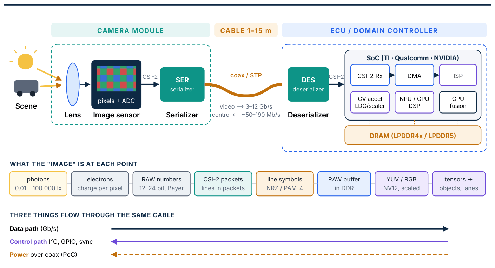
Walking the chain once
1 · Light. An object reflects or emits light. In a car the scene can range from a dark country road to direct sunlight on a white truck in the same frame — a contrast ratio well beyond a million to one. LED traffic lights and signs flicker at hundreds of hertz even though our eyes see them as steady.
2 · Lens. The lens forms a sharp, focused image of the world on a sensor that is only a few millimetres wide. Its field of view decides what the camera can "see"; its aperture decides how much light arrives; its quality decides how much detail survives. An infrared-cut filter usually sits behind it.
3 · Image sensor. Millions of photodiodes each collect electrons proportional to the light that hits them during the exposure time. A colour filter above each pixel lets it see only red, green or blue (the Bayer CFA). On-chip analogue-to-digital converters turn the charge into numbers, and the sensor streams them out row by row as RAW data.
4 · MIPI CSI-2. Inside the camera module, the sensor talks to the next chip over a short, very fast differential interface called CSI-2 (on the D-PHY or C-PHY electrical layer). It wraps every image line into a packet with a header, a checksum and a channel number. CSI-2 only works over a few tens of centimetres of PCB trace.
5 · Serializer → cable → deserializer (SerDes). The camera sits in a bumper or mirror, the computer is metres away. A serializer (TI FPD-Link, ADI GMSL, or the open standards MIPI A-PHY / ASA Motion Link) converts the CSI-2 stream into one multi-gigabit serial signal over a single coaxial cable — which also carries power to the camera and a slow return channel for configuring the sensor. In the ECU a deserializer recovers the stream and usually merges four or more cameras into one CSI-2 output.
6 · Capture and DMA. The SoC's CSI-2 receiver checks and sorts incoming packets by camera, and a DMA engine writes them straight into DRAM buffers without the CPU touching a single pixel.
7 · ISP. The image signal processor turns RAW Bayer into a usable picture: removes black offset and defects, merges HDR exposures, corrects lens shading, interpolates full colour (demosaic), fixes colour, reduces noise, compresses the tone range, and outputs YUV images at several sizes. Its statistics also drive the autoexposure and white balance loops that program the sensor for the next frame.
8 · Vision and AI. Lens-distortion correction, scaling, optical flow, stereo, and finally neural networks on the NPU/GPU/DSP turn images into objects, lanes, free space and depth — which then go to sensor fusion and driving functions.
Each block can only work with what the previous one delivers. A missed exposure decision, a saturated HDR channel, a CRC error on the link, or a DMA buffer that arrives late all look the same to a neural network: a worse image. Understanding the whole chain is what lets a team find the real root cause instead of tuning the wrong block.
Who owns what
| Stage | Main question it answers | Key numbers | Typical owner |
|---|---|---|---|
| Optics | What does the camera see, how sharp, how much light? | FOV, f-number, MTF | Camera HW / optics |
| Sensor | How much signal vs noise, how much dynamic range? | MP, pixel pitch, dB, fps | Camera HW + ISP |
| CSI-2 / SerDes | Can the bits arrive intact and on time? | Gb/s, lanes, cable length | HW / board + BSP |
| Capture / DMA | Are frames landing in memory without drops? | MP/s, buffers, latency | BSP / drivers |
| ISP + 3A | Does the image look right — for humans and for networks? | MP/s throughput, tuning | ISP / IQ team |
| Memory | Can DRAM feed all blocks at once? | GB/s, % utilisation | SoC / system architect |
| Perception | What is in the scene? | TOPS, ms per frame, accuracy | CV / ML team |
"A camera is not just a sensor. It is a chain: optics collect light, the sensor converts it into a RAW signal, a SerDes link carries it across the car on one coax cable together with power and control, the SoC captures it into memory, the ISP turns it into a clean image, and the AI extracts the scene. The system is only as good as its weakest link — and in practice the weakest links are dynamic range, link robustness and memory bandwidth."
2Light, scene and optics
Everything downstream is limited by how many photons reach each pixel and how cleanly the lens delivers them. Automotive scenes are extreme in brightness, contrast and timing — and that shapes every later design choice.
How bright is the world?
Illuminance is measured in lux. A clear sunny day gives roughly 100 000 lx; an office about 500 lx; a street under lamps 10–30 lx; a moonlit road 0.1 lx or less. That is six orders of magnitude, and the camera is expected to work across all of it. Exposure time and analogue gain cover the change between scenes; the real challenge is the contrast inside a single frame.
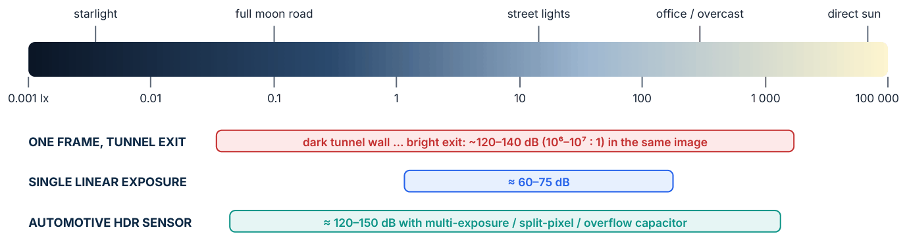
Dynamic range in decibels
Engineers express contrast in decibels: DR(dB) = 20·log10(max / min) . Every 6 dB doubles the ratio, so one extra bit of signal is worth about 6 dB. A 12-bit linear signal is therefore ~72 dB at best; 120 dB needs about 20 bits of linear information. This simple rule is why HDR sensors output 20–24-bit data and why companding (Chapter 5) exists.
LED flicker — the invisible problem
LED headlamps, traffic lights and variable message signs are driven by pulse-width modulation, typically at 90 Hz to several kHz. A human sees a steady light. A camera with a very short exposure (needed in bright daylight so that the sky does not saturate) can sample the LED exactly when it is off: the red light appears dark, or blinks from frame to frame, or a speed sign is half-drawn. For a traffic-light classifier this is a safety problem, so automotive sensors advertise LFM — LED Flicker Mitigation (Chapter 5).
The lens: forming the image
The lens maps directions in the world onto positions on the sensor. Three numbers describe most of what matters:
Field of view (FOV), set by focal length and sensor size. Front cameras range from narrow (~30°, longrange traffic signs) to wide (~120°, cut-ins and pedestrians); surround-view cameras use fisheye lenses with 180–200° horizontal FOV. f-number (F/#) = focal length ÷ aperture diameter. Light on the sensor scales with 1/F². An F/1.6 lens collects about 2.5× more light than F/2.5 — huge for night performance, but harder to make sharp at the image corners.
MTF (modulation transfer function) — how much contrast of fine detail survives, usually stated in line pairs per mm at the centre and the field edge. A high-megapixel sensor behind a soft lens gives more pixels but not more information.
Automotive lenses are fixed focus (no autofocus motor — too fragile and unnecessary at road distances) and are actively aligned and glued to the sensor in production. Their focus must stay stable from −40 °C to +105 °C, which is why glass and plastic element choices and the lens barrel material are a major engineering topic.
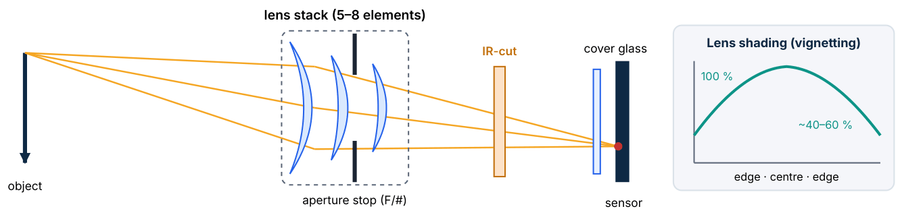
Optical effects the ISP and CV teams inherit
Lens shading / vignetting: corners can be 40–60 % darker than the centre, and the fall-off is slightly different per colour channel (colour shading). Corrected by a calibrated gain map in the ISP. Geometric distortion: straight lines appear curved, dramatically so with fisheye lenses. Corrected by a dewarp / LDC (lens distortion correction) block using the calibrated intrinsic model — or left in place and handled by the network. Chromatic aberration: different wavelengths focus at slightly different places, producing coloured fringes at high-contrast edges. Flare and ghosts: internal reflections from a low sun or headlights create veiling glare and phantom spots. Coatings and baffling reduce them; they cannot be fully removed in software. The windshield: front cameras look through tilted, curved glass with a heated area and sometimes a coating. It adds distortion, reduces MTF and reflects the dashboard ("veiling glare"), so a light-trap hood is part of the optical design.
The IR-cut filter decision
Silicon is sensitive up to about 1 000 nm, but the eye stops near 700 nm. With an IR-cut filter, colours look natural. Without it, the sensor gains sensitivity at night and can see near-infrared illumination (essential for driver-monitoring cameras with 940 nm LEDs), but colour accuracy suffers. RGB-IR sensors (Chapter 4) try to get both: colour by day and IR at night from one sensor.
Pixel count is not resolution. If the lens MTF is low at the pixel Nyquist frequency (one cycle per two pixels), upgrading from 3 MP to 8 MP mainly adds noise, bandwidth and power. Always ask for the lens MTF at the sensor's Nyquist frequency, at the field edge and at hot temperature.
Typical pixel pitch: 2.1–3.0 µm (front/surround), up to 4+ µm for low-light. An 8 MP sensor (3840 × 2160) at 2.1 µm is about 8.1 × 4.5 mm. Nyquist for 2.1 µm pixels ≈ 238 lp/mm. Light per pixel scales with pitch² — 3 µm collects about 2× more than 2.1 µm.
3The image sensor
A CMOS image sensor is millions of tiny light buckets plus a fast digital chip that measures how full each bucket is, many times per second. Most of its design is about collecting every photon possible while adding as little noise as possible.
One pixel, from top to bottom
Light first meets a microlens, a tiny dome that funnels light from the full pixel area into the light-sensitive part. Next is the colour filter (red, green, blue or clear — see Chapter 4). Below it, the photodiode in silicon converts each absorbed photon into one electron with a probability called quantum efficiency (QE), typically 50–80 % for green light. Electrons accumulate in the photodiode during the exposure time, like rain collecting in a bucket. The bucket size is the full-well capacity — a few thousand to tens of thousands of electrons — and when it is full, the pixel saturates.
Modern automotive sensors are back-side illuminated (BSI): the wafer is flipped and thinned so light enters from the back, without having to pass between metal wiring layers. Many are also stacked: the pixel array is one wafer, bonded on top of a second wafer containing ADCs and digital logic, which allows more processing (HDR merge, safety checks) without increasing die size. Deep trench isolation walls between pixels stop light and electrons leaking into neighbours (crosstalk), which would desaturate colours.
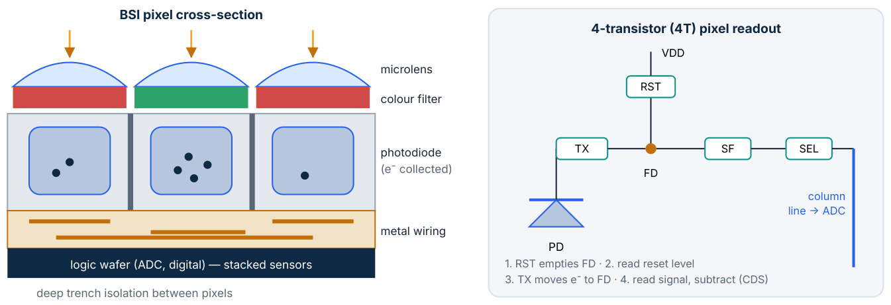
From charge to a number
Charge is transferred to the floating diffusion, a tiny capacitor whose voltage changes by a fixed amount per electron — the conversion gain, tens of µV per electron. A source-follower buffers that voltage onto a shared column line. At the bottom of each column sits an ADC (usually a single-slope ramp converter, thousands working in parallel), which turns the voltage into a 10–12-bit number. A row of pixels is converted at once, then the next row, and so on.
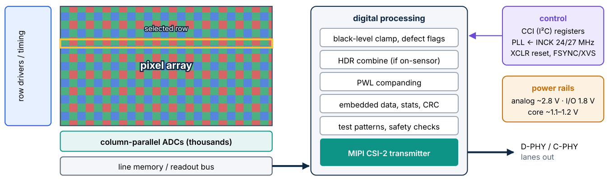
Frame timing: HTS, VTS and frame rate
Sensors are configured in lines and pixel clocks. Each line takes a fixed time (line length, often called HTS or LLP) including some blanking; each frame takes a fixed number of lines (frame length, VTS or FLL) including vertical blanking. The frame rate follows directly, and exposure time is programmed in lines:
frame_rate = pixel_clock / (HTS × VTS)
line_time = HTS / pixel_clock e.g. 4400 / 132 MHz ≈ 33.3 µs
exposure = coarse_integration_lines × line_time (max ≈ VTS − a few lines)This is why exposure is often quantised to whole line times, and why longer exposure than one frame period forces the frame rate down — the auto-exposure algorithm has to know these limits.
Rolling shutter versus global shutter
Because rows are read one after another, most sensors also expose them one after another: each row starts and ends its exposure one line-time later than the row above. This is a rolling shutter. It is simple, low-noise and supports HDR well, so nearly all exterior automotive cameras use it. The cost is that the top and bottom of the image are captured at different moments — 15–30 ms apart. Fast lateral motion makes vertical objects lean (skew), and a rotating wheel looks bent. For perception and multi-camera fusion this matters: each row has its own timestamp.
A global shutter sensor exposes all pixels at the same instant and stores the charge in an in-pixel memory until readout. No skew, but the extra storage costs fill factor, noise and dynamic range. It is common for driver/occupant monitoring (synchronised with pulsed IR LEDs) and machine-vision applications.
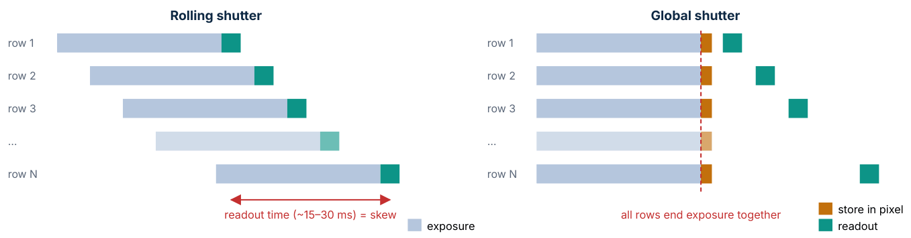
Noise — the real enemy
An image sensor never measures light perfectly. The noise sources are few, and knowing them explains most image-quality behaviour:
Photon shot noise is physics, not imperfection: light arrives randomly, so a pixel collecting N electrons has a noise of √N. It dominates in bright regions. With 10 000 e⁻ the best possible SNR is √10 000 = 100 (40 dB). Read noise (1–3 e⁻ in good sensors) comes from the source follower and ADC. It dominates in the dark and sets the low end of dynamic range. Dark current — electrons generated by heat, not light. It roughly doubles every 6–8 °C. At +105 °C inside a sun-baked windshield module it can be a hundred times worse than at room temperature, producing a raised, noisy black level and hot pixels. This is a uniquely automotive problem. Fixed-pattern noise — the same in every frame: dark-signal non-uniformity (DSNU), pixel response nonuniformity (PRNU), and row/column noise that the eye and CNNs see as stripes.
SNR = S / √(S + D + r²) S = signal e⁻, D = dark e⁻, r = read noise e⁻
DR = 20·log10(full_well / read_noise) e.g. 10 000 / 2 → 74 dB (single exposure)Because shot noise grows with the signal, the "error" in bright pixels is large in absolute terms but small relative to the signal. This single fact justifies companding (bright values can be stored coarsely), noise models used in ISP denoising (noise depends on brightness and gain), and the SNR10 metric — the illumination at which SNR reaches 10 — used to compare low-light sensors.
What a sensor datasheet tells you
| Parameter | Typical automotive values | What it really means |
|---|---|---|
| Resolution | 1.3–3 MP (surround, in-cabin), 5–8 MP (front), 12+ MP emerging | Detail at distance; scales link, ISP and memory load linearly. |
| Pixel pitch / optical format | 2.1–3 µm; 1/2.7″ to 1/1.7″ | Light per pixel and lens size/cost. |
| Frame rate | 30 fps (common), 45–60 fps | Reaction time, motion blur, bandwidth. |
| HDR / LFM | 120–150 dB, LFM yes/no | Tunnels, headlights, traffic-light reliability. |
| Output | RAW12/14/16/20/24, PWL, CSI-2 2/4 lanes | Data rate on CSI-2 and SerDes. |
| SNR1 / SNR10 | in lux | Low-light capability (lower is better). |
| Functional safety | ASIL-B/C capable, safety manual | Built-in checks the system can rely on. |
| Temperature / quality | −40…+105/125°C,AEC-Q100 | Automotive qualification, dark current behaviour. |
Example product families: Sony IMX490 / IMX728, onsemi Hyperlux AR0823AT, OmniVision OX08B40 / OX08D10. Each combines HDR with LED flicker mitigation in a different way.
From lux to electrons: what a pixel collects at night
Datasheets quote low-light performance as SNR1 or SNR10: the illuminance at which the signal-to-noise ratio reaches 1 (the object is barely there) or 10 (usable for most vision tasks). To understand those numbers, and to compare sensors and lenses honestly, it helps to follow the light from the street to the pixel once with real numbers.
Start with the scene. Illuminance E (lux) falls on an object; a matte object with reflectance ρ sends back luminance ρE/π. The lens collects a cone of that light and spreads it over the sensor. For a distant object on the optical axis, the illuminance on the sensor plane is approximately
E_sensor ≈ E_scene · ρ · T / (4 N²)
where T is the lens transmission and N the f-number. At f/1.6, an 18 % grey object and T = 0.9 the sensor receives only 1.6 % of the scene illuminance; every step from f/1.6 to f/2.0 costs another 36 %. Off axis, relative illumination falls further (the "cos⁴" fall-off and vignetting of Chapter 2), which is why corners are the first place to fail at night.
Next, convert lux to photons. Lux is weighted by the eye's sensitivity, so the conversion depends on the spectrum. For daylight-like light (D65) between 400 and 700 nm, one lux delivers about 10 850 photons per second per µm². A green pixel with a peak quantum efficiency of 60 % and a real green filter turns about 2 330 of them into electrons. Multiply by the pixel area and the exposure time and you have the signal. With the noise formula of the previous section (shot noise √S plus read noise), the SNR follows.
For a 3.0 µm pixel behind an f/1.6 lens at 33 ms, a grey object under a 1 lux street gives only 11 electrons per green pixel, an SNR of 2.8. At 10 lux it is 109 electrons and SNR 10.3. SNR 1 is reached at 0.23 lux and SNR 10 at 9.5 lux of scene illuminance. A 2.1 µm pixel collects half the light and needs 19 lux for SNR 10; shortening the exposure to 11 ms to limit motion blur pushes SNR 10 to 28 lux. The figure lets you try other combinations. Red and blue pixels collect fewer electrons than green, and colour noise after the CCM is higher still (Chapter 4).
interactive.js; check_interactive.js reproduces the numbers in the text.SNR1 values on datasheets are not comparable unless the conditions are. Some vendors quote illuminance at the sensor plane rather than at the scene (a factor of about 60 at f/1.6 with a grey object), some assume a white object, a longer exposure, a different light source or noise reduction. Ask for the definition, or measure both candidates the same way (EMVA 1288 for the sensor, IEEE 2020 for the camera).
3.0 µm, f/1.6, 33 ms, read noise 2 e⁻, 18 % grey: 1.1 e⁻ at 0.1 lx, 11 e⁻ at 1 lx (SNR 2.8), 109 e⁻ at 10 lx (SNR 10), 1 090 e⁻ at 100 lx (SNR 33). Each factor of 10 in light gives a factor of √10 ≈ 3.2 in SNR once shot noise dominates.
4Colour: CFA, Bayer and colour science
A photodiode counts photons but cannot tell their colour. The colour filter array gives each pixel one colour, and the ISP later rebuilds a full-colour image. The choice of pattern trades colour accuracy against sensitivity — and automotive often chooses differently from phones.
The Bayer pattern
A colour filter array (CFA) is a mosaic of tiny filters, one per pixel. The classic arrangement, invented by Bryce Bayer at Kodak in 1976, repeats a 2 × 2 tile of one red, two green and one blue filter. Green gets twice as many pixels because the human eye derives most perceived brightness and detail from the green part of the spectrum, so green effectively carries the luminance channel. The tile's start position is described by its first two rows: RGGB, GRBG, GBRG or BGGR. Mirroring or cropping the image by one pixel changes the phase — a classic bring-up bug that produces wildly wrong colours.
The output of a Bayer sensor is a RAW image: one number per pixel, each meaning something different depending on its position. It is not yet a colour picture. The ISP's demosaic step estimates the two missing colours at every pixel from its neighbours. Simple methods average neighbours; good ones follow edges so that interpolation happens along an edge rather than across it.
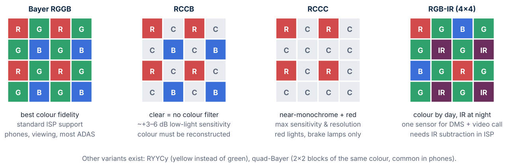
Why not just use Bayer everywhere?
Each colour filter throws away roughly two-thirds of the light. For a viewing camera (rear view, surround view, mirror replacement) that is fine — humans demand accurate colour. For a machine-vision camera the main goal is detection at night and at long range, so some front cameras replaced green with clear (C) pixels: RCCB keeps red and blue to recover colour, RCCC keeps only red (enough to recognise traffic lights and tail lights). The clear channel collects light across the full visible band, giving a meaningful sensitivity gain.
The price is paid in the ISP: colour must be estimated by mathematics (for RCCB, roughly G ≈ C − R − B, which amplifies noise), colours look less saturated or shifted, and standard tuning tools and pre-trained networks expect RGB. The industry trend in recent years has partly moved back towards Bayer RGGB, because modern BSI sensors with larger pixels and better HDR closed much of the sensitivity gap, and one camera increasingly serves both viewing and perception.
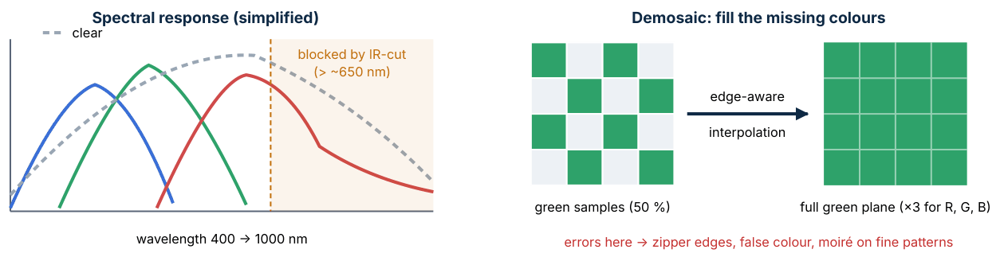
Networks learn the "look" of a specific CFA + ISP chain. A model trained on RGGB data processed by one vendor's ISP and deployed on an RCCB camera (or even the same sensor with a differently tuned ISP) can lose accuracy in ways that are hard to diagnose. Treat the CFA and ISP tuning as part of the dataset definition.
"The sensor is colour-blind. A tiny mosaic of red, green and blue filters lets each pixel see one colour, and the ISP fills in the rest. In automotive we sometimes replace green with clear pixels to win night sensitivity for the AI, at the cost of colour accuracy. It is a product decision: who looks at the image — a person or a network?"
From spectra to numbers: XYZ and the standard observer
Colour is not a property of light. It is what three kinds of cone cells in the eye report when light reaches them. Each cone type (long, medium and short wavelength) has a broad sensitivity curve, and the brain only receives three numbers per point in the image. That is why two physically different spectra can look identical: if they produce the same three cone responses, they are the same colour to a person. This effect is called metamerism, and it is the reason a colour can be described with three numbers at all.
In 1931 the CIE turned this into a measurement system. From colour-matching experiments with human observers it defined three colour matching functions x̄(λ), ȳ(λ), z̄(λ). Multiply a spectrum by each of them and integrate, and you get the tristimulus values X, Y, Z. Two stimuli with the same XYZ match for the standard observer. The functions were chosen so that Y is exactly the luminance (ȳ equals the eye's daylight sensitivity V(λ), the curve that also defines the lux), and so that all values are positive. XYZ is therefore the common ground on which every other colour space is defined: sRGB, BT.709, BT.2020, CIELAB and the colour of a display are all fixed by their relation to XYZ.
To talk about colour without brightness, XYZ is normalised: x = X/(X+Y+Z), y = Y/(X+Y+Z). The chromaticity diagram in Figure 4.3 plots every colour on this plane. Pure spectral colours form the horseshoe-shaped boundary, every real colour lies inside it, and a display or colour space with three primaries can only show the colours inside the triangle spanned by its primaries, its gamut. sRGB, which shares its primaries with HDTV (BT.709), covers about a third of the visible area; BT.2020, made for HDR and wide-colour video, covers much more.
A camera does exactly what the eye does, with different curves. Each pixel integrates the light spectrum against its own filter-times-silicon sensitivity and reports one number per channel. If the camera's three sensitivities were an exact linear combination of the CIE matching functions (the Luther or Luther–Ives condition), one 3 × 3 matrix would convert camera RGB to XYZ perfectly for every spectrum. No real sensor meets it: colour filters are chosen for sensitivity, cost and stability, not to mimic cones. The consequence is sensor metamerism. Two surfaces that look identical to a person can give different camera values, and vice versa, so any conversion from camera RGB to a standard colour space is a best fit, not an identity.
cp_numbers.py).Everything the ISP does with colour is defined relative to XYZ: the white balance target, the colour matrix, the output colour space and the numbers in a test report (ΔE). If you know that a camera has its own three curves and that a 3 × 3 matrix can only approximate the eye, most colour discussions become concrete: what is the reference, which light was used, and how large is the remaining error.
The colour correction matrix: from camera RGB to a standard space
The colour path through the ISP has three steps that are easy to mix up. White balance is a diagonal gain (one number per channel) that makes neutral surfaces come out neutral under the current light; it answers "which light is this?". The colour correction matrix (CCM) is a full 3 × 3 matrix applied after white balance; it answers "how do this sensor's channels map onto standard primaries?" and converts white-balanced camera RGB into linear sRGB/BT.709 (or another output space). Only after that does the transfer function (next section) turn linear values into code values. The CCM sits in linear light because it models a physical mixing of channels; applied after gamma it would be wrong for every brightness except one.
The matrix is found by a fit. Photograph a chart with known spectra (the 24-patch ColorChecker is the usual one) under a known light, white-balance it, and look for the matrix that maps the 24 measured camera triplets as closely as possible onto the 24 target values. Least squares on linear RGB gives a first answer in one line of linear algebra; production tools minimise the error in a perceptual space (ΔE in CIELAB, below) with a nonlinear optimiser, and they add a constraint that each row sums to one, so that a white input stays white and the white balance is not undone. The derivation in tuning depth, with the colour-versus-noise trade-off, is in ISP engineering 4.4.
On the simulated camera of Figure 4.3 the white-preserving least-squares fit gives
| Output | × camera R | × camera G | × camera B |
|---|---|---|---|
| sRGB red | 1.92 | −0.72 | −0.20 |
| sRGB green | −0.17 | 1.81 | −0.64 |
| sRGB blue | 0.07 | −0.61 | 1.54 |
The pattern is typical: large positive numbers on the diagonal and negative numbers beside it. The matrix subtracts the overlap between the filters to make colours as saturated as the standard primaries. The mean colour error over the 24 patches falls from ΔE00 7.5 with white balance only to 2.4 with the matrix; the yellow patch goes from 13.1 to 0.8. The price is noise. A row like (1.92, −0.72, −0.20) adds independent noise from three channels, and its noise gain is √(1.92² + 0.72² + 0.20²) ≈ 2.1. Colour accuracy in good light therefore costs chroma noise in poor light, and ISPs reduce saturation as gain rises.
A camera that has to work under daylight, halogen, fluorescent and LED light does not have one matrix. It stores a few (typically for about 2800 K, 4000 K and 6500 K) and interpolates by the colour temperature the AWB has estimated (ISP engineering 4.6).
Measuring colour error: CIELAB and ΔE
To say "how wrong" a colour is, distances in XYZ or RGB are useless, because equal steps there are not equally visible. CIELAB (L*a*b*, CIE 1976) warps XYZ, relative to a reference white, into a space that is roughly perceptually uniform: L* is lightness from 0 to 100 (close to a cube root of luminance), a* runs green to red and b* blue to yellow. The original colour difference ΔE76 is the Euclidean distance in Lab. ΔE00 (CIEDE2000) adds corrections for lightness, chroma and hue, where Lab is known to be uneven. As a rough guide, a ΔE00 around 1 is close to the smallest difference a trained observer sees between two side-by-side patches, and well-tuned cameras land at a mean of a few units on a ColorChecker. Lab is a space for measuring; ISPs rarely process in it, because the conversion is costly and nonlinear.
A ΔE number means nothing without its conditions: which chart, which light, which reference white, ΔE76 or ΔE00, with or without the luminance term, mean or maximum. A camera quoted at "ΔE 3" by one lab and "ΔE 6" by another may be the same camera.
Transfer functions and bit depth: why 8 bits can be enough, and when they are not
The sensor counts electrons, so raw data is linear: twice the light gives twice the number. Human vision is not linear. Lightness perception is closer to a cube root of luminance, so the eye sees the step from 1 % to 2 % of white as large as the step from 50 % to 100 %. A linear code spends half of all its values on the brightest stop (from 50 % to 100 % of white) and almost nothing on the shadows, where the eye is most sensitive to steps. A transfer function (also called a gamma or encoding curve) fixes that by compressing the highlights and expanding the shadows before quantisation. Strictly, the curve applied by a camera is an OETF (opto-electronic transfer function) and the curve of a display an EOTF; together with the rendering intent they make the end-to-end system.
The common curves are close relatives. sRGB (IEC 61966-2-1) is linear with slope 12.92 below 0.0031308 and 1.055·L1/2.4 − 0.055 above it, about a 2.2 gamma overall. BT.709 for HD video is linear with slope 4.5 below 0.018 and 1.099·L0.45 − 0.099 above it. For HDR video, BT.2100 defines PQ (SMPTE ST 2084, absolute luminance up to 10 000 cd/m²) and HLG (relative, compatible with standard displays). An 18 % grey card ends up at code 0.46 in sRGB and 0.41 in BT.709, close to the middle of the range, which is exactly the point.
cp_numbers.py.The consequence is a rule about bit depth. Around 1 % of white (deep shadow), one code step of 8-bit linear data is about 2.7 L* units, a clearly visible band; 8-bit sRGB has steps of 0.5 L*, 10-bit linear 0.75, and 12-bit linear 0.2. Linear data needs about 12 bits to be as smooth in the shadows as 8-bit gamma-encoded data. That is why raw stays at 12 bits or more (and is companded on the link, Chapter 5), why viewing outputs are 8-bit after a transfer function, and why HDR video moved to 10 bits.
The transfer function is not the tone curve. Tone mapping (Chapter 10) decides how a 120 dB scene is rendered into a limited output range: a creative or task-driven choice that changes the picture. The transfer function is an encoding contract: the producer applies it, the consumer inverts it, and if both agree, no information is lost beyond quantisation. Many bugs come from mixing them up, for example applying a CCM or a resize to gamma-encoded data as if it were linear, or feeding a network that was trained on linear data with sRGB images.
For a perception output, ask three questions about every buffer: is it linear or encoded (and with which curve), how many bits, and which colour space and range. Write the answers into the interface specification and into the buffer metadata. A network trained on 8-bit sRGB from one ISP and fed 8-bit BT.709 limited-range YUV from another will see a slightly different world on every frame.
YUV, HSV and Lab: which colour space for which job
After the transfer function, most ISPs convert to Y′CbCr, usually called YUV. It separates a brightness signal from two colour-difference signals: Y′ = KR·R′ + KG·G′ + KB·B′, Cb = (B′ − Y′) / (2(1 − KB)), Cr = (R′ − Y′) / (2(1 − KR)). The coefficients come from the standard: KR = 0.299, KB = 0.114 for BT.601 (standard definition) and KR = 0.2126, KB = 0.0722 for BT.709. The primes matter: Y′ is computed from gamma-encoded values, so it is luma, not the true luminance Y of XYZ. The split pays off immediately, because the eye resolves colour much more coarsely than brightness: storing Cb and Cr at half resolution in both directions (4:2:0) cuts the data from 3 to 1.5 bytes per pixel with little visible loss. NV12, the most common camera buffer format, is exactly that: a full-size Y plane followed by an interleaved half-size CbCr plane (Camera, GPU and display 2.5; how codecs exploit it in Video compression 2.1).
Y′CbCr also comes in two ranges. Limited (video) range puts 8-bit black at 16 and white at 235, with chroma from 16 to 240, leaving headroom for filter overshoot; full range uses 0 to 255. The matrix (601, 709 or 2020) and the range are metadata that must travel with the buffer. Getting the range wrong gives washed-out greys or crushed blacks; getting the matrix wrong gives small hue shifts, mostly in reds and greens, that nobody notices until a traffic-light classifier does (GLES surround view 7.2).
| Space | Built from | Used for | Watch out for |
|---|---|---|---|
| Camera RGB (raw) | The sensor's own filters | Everything before the CCM: statistics, white balance, raw-domain noise reduction | Different for every sensor and filter lot |
| Linear sRGB / BT.709 | XYZ with standard primaries and D65 white | Colour processing that models light: CCM, blending, resizing done right | Must stay at 12+ bits or float |
| R′G′B′ (encoded) | Linear RGB through a transfer function | Display, files, most network inputs | Arithmetic on it is not physical |
| Y′CbCr (YUV) | R′G′B′ with a 601/709/2020 matrix | ISP output, encoders, buffers (NV12) | Matrix and range metadata; chroma siting |
| HSV / HSL | R′G′B′ rearranged into hue, saturation, value | Simple colour thresholds in classical CV, user interfaces | Hue is undefined for greys and jumps in noise and under wrong white balance |
| CIELAB | XYZ relative to a reference white | Measuring colour differences (ΔE), tuning targets | Costly to compute, depends on the chosen white |
| XYZ | CIE colour matching functions | The reference behind all of the above; colour measurement | Not used for storing images |
"The sensor has its own idea of red, green and blue. White balance removes the colour of the light, a 3 × 3 matrix maps the sensor's channels onto standard primaries, and a transfer function spends the code values where the eye needs them. Only then do we go to YUV, which lets us store colour at quarter resolution. Each of those steps is a contract, so we write down the colour space, the curve and the range of every buffer we hand over."
5HDR, LED flicker mitigation and companding
A single exposure of a normal pixel covers roughly 70 dB; a tunnel exit or night street with headlights needs 120 dB or more, and LEDs must never disappear. Automotive sensors solve this with several clever tricks — and then have to squeeze the result back into a manageable number of bits.
Four ways to extend dynamic range
The problem has two ends: dark areas need long exposure or high gain to rise above read noise; bright areas need short exposure or a larger bucket so they do not saturate. HDR techniques combine both views of the same scene:
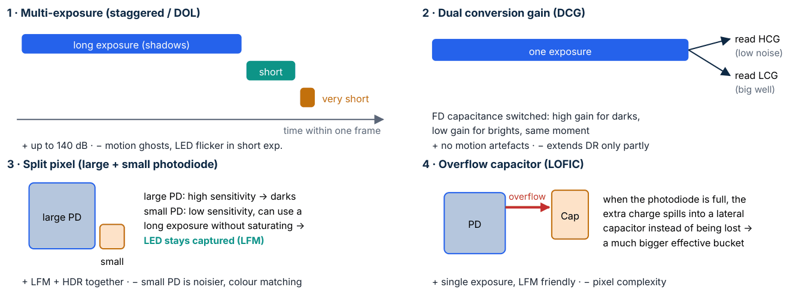
Multi-exposure is the most intuitive: capture the same rows with a long, a short and sometimes a very short exposure, then merge. In staggered / DOL mode the exposures for one row happen back-to-back and are interleaved line-by-line on the output, so the time gap is small. Still, anything that moves between exposures can create ghosts or coloured edges, and the short exposures are exactly the ones that miss LED pulses.
Dual conversion gain reads the same charge twice through two gain settings — one optimised for low noise, one for capacity — so there is no time gap at all. Split pixels place a large and a small photodiode under one microlens; the small one sees ~1/10 to 1/100 of the light and can therefore run a long exposure in bright scenes. LOFIC (lateral overflow integration capacitor) captures the charge that would otherwise be thrown away when the photodiode fills up.
LED flicker mitigation (LFM)
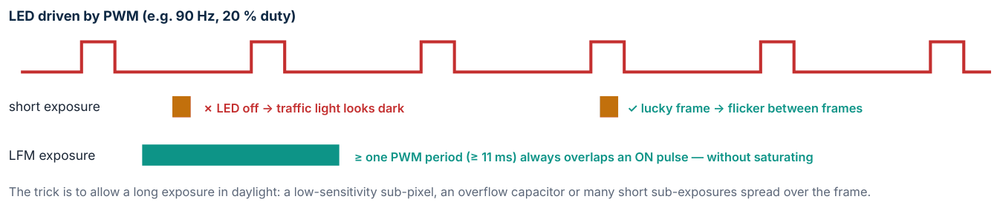
The SNR dip — HDR's hidden cost
When a merged HDR image switches from one exposure (or photodiode, or gain) to the next, the SNR suddenly drops, because the new source captured fewer electrons for the same brightness. These SNR dips appear as visible noise bands in smooth gradients like the sky or a painted wall, and they can confuse feature detectors. Sensor vendors quote the minimum SNR at transitions (e.g. "> 25 dB across the range"); ask for this curve, not just the headline dB number.
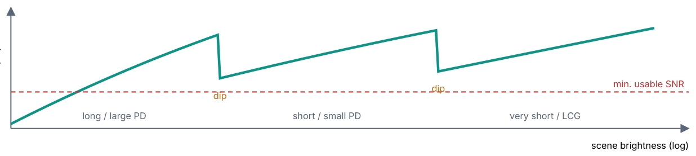
Companding: fitting 24 bits into 12
A merged HDR pixel needs ~20–24 bits of linear range. Sending that raw would double the CSI-2 and SerDes bandwidth and the DDR footprint. Instead the sensor applies piecewise-linear (PWL) companding: a curve made of a few straight segments ("knee points") that keeps full precision for dark values and progressively coarser steps for bright ones. The output is 12, 14 or 16 bits. The ISP's first job is decompanding — an inverse lookup table that restores the linear values.
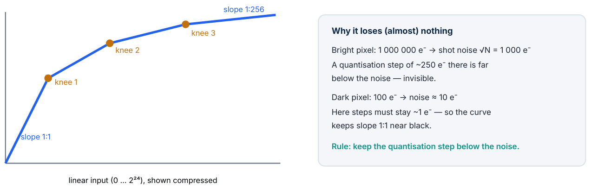
Merge on the sensor or in the ISP?
| On-sensor merge (single PWL stream) | Separate exposures to the ISP | |
|---|---|---|
| Link bandwidth | 1× (e.g. RAW12/16 PWL) | 2–3× (one image per exposure) |
| ISP requirements | Decompand LUT only | Multi-frame HDR merge block |
| Control and tuning | Merge fixed by sensor vendor | Merge and motion handling tunable |
| Typical use | Most multi-camera ADAS systems | Premium IQ, platforms with strong HDR ISPs |
12 bits ≈ 72 dB · 16 bits ≈ 96 dB · 20 bits ≈ 120 dB · 24 bits ≈ 144 dB. LED PWM 90 Hz → period 11.1 ms. A 30 fps frame is 33.3 ms, so LFM exposure fits inside one frame only if sub-pixels or LOFIC prevent saturation.
"Leaving a tunnel the scene contrast is around a million to one. Our sensor captures it in one frame by combining a sensitive pixel for the shadows with a low-sensitivity pixel — or an overflow capacitor — for the highlights. That same trick lets it use exposures long enough to always catch the LED pulses of traffic lights, so they never disappear. The 24-bit result is compressed to 12–16 bits with a curve that hides the rounding inside the natural photon noise."
6Controlling the sensor: CCI, registers, sync
Video flows out of the sensor at gigabits per second, but the sensor is configured and steered over a slow two-wire bus. Every exposure change, every mode switch and every safety check travels through this control path — in a car, across a cable and back.
CCI — an I²C bus with conventions
MIPI CSI-2 defines a Camera Control Interface (CCI). In practice it is an I²C bus (400 kHz Fast-mode or 1 MHz Fast-mode Plus) with a convention: sensors use a 7-bit device address and usually 16-bit register addresses with 8-bit data. Newer sensors may also support I3C, which is faster, uses push-pull signalling and allows the sensor to raise in-band interrupts. MIPI's Camera Command Set (CCS) standardises common register addresses (identification, streaming on/off, frame timing), although most automotive sensors still ship vendor-specific register maps and initialisation tables.
Bringing a sensor to life
Before a single pixel streams, a strict sequence must happen. Getting it wrong can produce a sensor that answers on I²C but never streams, or that streams garbage after a warm reset.
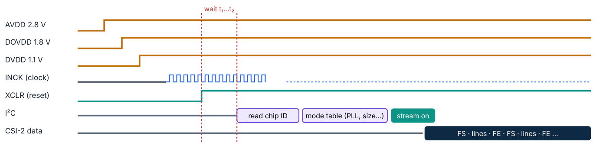
Changing exposure without tearing the image
Auto-exposure updates exposure time and gain every frame. If exposure is applied to frame N but gain only to frame N+1, one frame will flash. Sensors therefore offer group hold (also "register grouping"): the host writes a batch of registers, and the sensor applies all of them together at the next frame boundary. Even so, settings typically take effect one or two frames later — the ISP's 3A software must model this pipeline delay, or the exposure loop will oscillate.
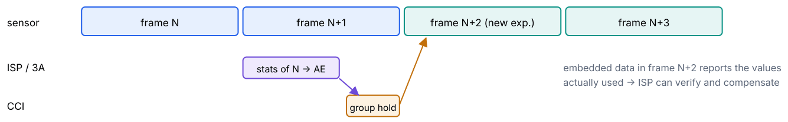
Embedded data: the frame's passport
Most automotive sensors can prepend (and append) a few embedded data lines to every frame — CSI-2 packets with a special data type ( 0x12 , "embedded 8-bit non-image data") rather than pixels. They carry the register values actually used for this frame (exposure, gains, HDR mode), a frame counter, temperature, and sometimes histograms or safety status bits. The ISP uses them to interpret the frame correctly; the safety monitor uses the frame counter to detect frozen or repeated frames. A CSI-2 receiver must be told to route this data type separately, otherwise the "image" appears to have a few garbage lines on top.
Synchronising many cameras
Surround view stitching, stereo and multi-camera fusion want all cameras to expose at the same time. Each sensor has a sync pin (names include FSIN, XVS, FSYNC, TRIGGER). In slave mode the sensor starts each frame on an external pulse. In a car, that pulse is generated in the ECU — typically by the deserializer or an SoC timer — and sent through the SerDes back channel as a GPIO to every camera. The achievable alignment is in the microsecond range, far better than the millisecond-scale skew of free-running cameras. For fusion with radar and lidar, frames are additionally tagged with a gPTP (IEEE 802.1AS) time base distributed across the vehicle network.
Synchronising the frame start does not synchronise the exposure if cameras run different exposure times — the middle of exposure is what matters for motion. With a rolling shutter each row also has its own time. For accurate fusion, timestamp the mid-exposure of a reference row and model the row delay.
Other control-path signals: an error / fault output (e.g. ERRB) that the sensor asserts on internal safety failures, GPIOs for illumination LEDs in driver-monitoring cameras, and an on-die temperature sensor read through registers. In a SerDes system all of these are forwarded through the same back channel, so the deserializer's GPIO mapping is part of the camera driver configuration.
7MIPI CSI-2 and D-PHY / C-PHY
CSI-2 is the lingua franca of cameras: every automotive sensor speaks it, every serializer accepts it, every deserializer outputs it, and every SoC receives it. It is a simple packet protocol on top of a very fast, very short electrical link.
The layer cake
CSI-2 is specified by the MIPI Alliance as a stack of layers, much like a network protocol. Understanding which layer an error belongs to speeds up debugging enormously.
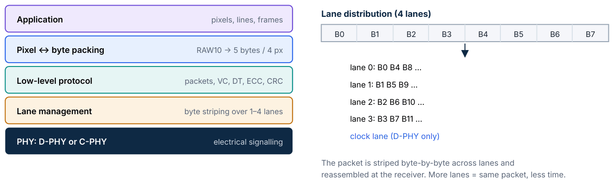
The PHY: D-PHY and C-PHY
D-PHY uses one differential clock lane plus one to four differential data lanes (100 Ω pairs). It has two modes: a high-speed (HS) mode with ~200 mV low-swing differential signalling for data, and a low-power (LP) mode with 1.2 V single-ended signalling used between packets and to signal the start and end of transmissions. Every burst begins with a Start-of-Transmission (SoT) pattern: the lane leaves LP, drives an HS-zero period, then sends the sync byte 0xB8 so the receiver can find byte boundaries. D-PHY v1.2 runs up to 2.5 Gb/s per lane (and requires a deskew calibration above 1.5 Gb/s); later versions go higher.
C-PHY uses trios of three wires and encodes data in transitions between three-level states, with the clock embedded in the data. It carries about 2.28 bits per symbol, so a trio at 2.5 Gsym/s moves ~5.7 Gb/s with fewer pins than D-PHY. Both can coexist on SoCs as a "combo PHY" (Qualcomm, for example, supports both).
Both PHYs are designed for short PCB traces — typically up to ~20–30 cm with careful layout. That is plenty inside a camera module or an ECU, but useless across a vehicle. Hence SerDes.
Packets: the heart of CSI-2
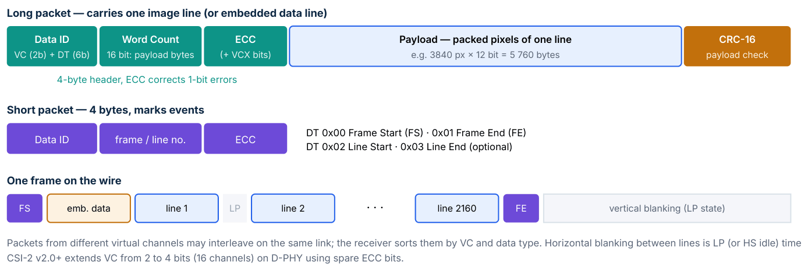
Virtual channel and data type — the two labels on every packet
The Data Type (DT) says what is inside: 0x2B RAW10, 0x2C RAW12, 0x2D RAW14, 0x2E RAW16, 0x2F RAW20, 0x1E YUV422 8-bit, 0x24 RGB888, 0x12 embedded data, and user-defined types 0x30–0x37 . The
Virtual Channel (VC) says which logical stream it belongs to. One sensor can use VCs to separate HDR exposures; a deserializer uses them to separate cameras — four cameras arrive on one physical CSI-2 port as VC0…VC3. The receiver's routing table, "VC x + DT y → buffer z", is one of the most important pieces of configuration in a multi-camera system.
Packing: how pixels become bytes
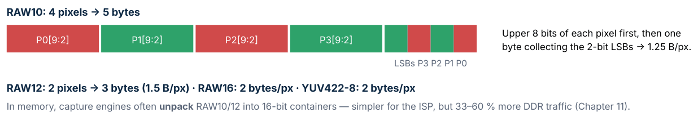
Bandwidth: the one calculation everyone should be able to do
payload_rate = width × height × fps × bits_per_pixel
link_rate ≈ payload_rate × (1 + overhead) overhead ≈ 10–25 %
per_lane = link_rate / lanesExample: 3840 × 2160 × 30 fps × 12 bit = 2.99 Gb/s payload
+ ~20 % blanking/protocol ≈ 3.6 Gb/s on the link
over 4 D-PHY lanes ≈ 0.9 Gb/s per lane (OK for 1.5–2.5 Gb/s lanes)
Same sensor at 60 fps, RAW16 (HDR) ≈ 9.6 Gb/s → needs fast lanes AND a fast SerDesBlanking is not free. A sensor with short horizontal blanking produces bursty data: during a line the instantaneous rate is higher than the average. Lane rate, serializer input and receiver FIFOs must handle the peak during the line, not just the frame average.
Errors and what they usually mean
| Error counter SoT / SoT-sync error | Layer PHY | Typical cause Signal integrity, wrong HS settle time, missing deskew, lane swap /polarity |
| ECC 1-bit (corrected) | Protocol | Marginal link — works, but investigate |
| ECC 2-bit / header error | Protocol | Packet dropped; often bad link or wrong lane count |
| CRC error | Protocol | Corrupted payload: noise, crosstalk, too-high rate |
| Word count mismatch / line length | Protocol/app | Wrong width or data type configured in the receiver |
| FIFO overflow | Receiver | Downstream (DMA/DDR) too slow, burst rate too high |
| Frame sync error (FS without FE) | App | Sensor reconfigured mid-stream, dropped short packets |
"CSI-2 sends each image line as a packet with a label: which camera (virtual channel) and which pixel format (data type), plus error checking. It runs over one to four very fast lanes but only across a circuit board — so in a car we put a serializer right next to the sensor to carry it over the cable."
8SerDes: FPD-Link, GMSL, A-PHY, ASA-ML
The sensor sits in a bumper, a side mirror or behind the windshield; the computer sits in the trunk or under a seat. A SerDes pair bridges metres of noisy vehicle with a single thin cable that carries gigabits of video, the control channel, sync signals and the camera's power — all at once.
Why not just extend CSI-2?
CSI-2 needs up to five differential pairs, has no equalisation, no power delivery, a separate I²C bus, and is specified for centimetres of PCB trace. Stretching it over 5–15 m of vehicle harness would fail on every front: signal loss, electromagnetic emissions (automotive EMC limits such as CISPR 25 are strict), susceptibility to interference from motors and ignition, connector count, cable weight and cost. A serializer/deserializer (SerDes) link replaces all of that with one 50 Ω coaxial cable (or one shielded twisted pair) and a pair of chips designed specifically for the car.
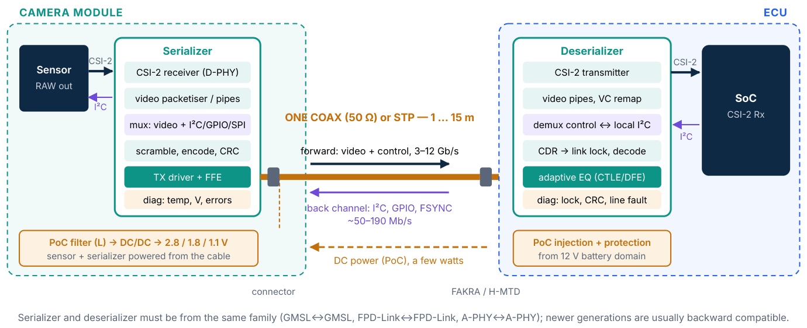
How the link works, step by step
Packing. The serializer's CSI-2 receiver takes the sensor's packets. Video is placed into the link's own frame format together with time-multiplexed control traffic (I²C, UART, SPI, GPIO states). Data is scrambled — so that long runs of 0s or 1s do not occur and the energy spectrum is flat, which helps both clock recovery and EMC — and protected with error-detection codes.
Driving the cable. A coax cable behaves like a low-pass filter: the higher the frequency, the more it attenuates, and the longer the cable, the worse it gets. A 12 Gb/s link may lose around 18 dB at its Nyquist frequency over a long harness with inline connectors. The transmitter pre-distorts the signal (feed-forward equalisation) to boost high frequencies in advance.
Recovering the signal. At the deserializer, the eye diagram is nearly closed. An adaptive equaliser — a continuous-time linear equaliser (CTLE) plus a decision-feedback equaliser (DFE) — reconstructs it, and keeps adapting as temperature and cable ageing change. A clock and data recovery (CDR) loop locks onto the incoming bit stream; when it succeeds, the device reports link lock. Only then can the control channel work and video flow.
Two directions on one wire. The return channel runs at a much lower rate in the opposite direction on the same conductor. Because the two directions are far apart in frequency (and the transceivers cancel their own echo), they coexist. This asymmetry is deliberate: a camera needs gigabits out, but only kilobits to megabits of configuration in.
Re-creating CSI-2. The deserializer reassembles the video, assigns each camera stream a virtual channel, and outputs standard CSI-2 to the SoC. To software the camera looks almost like a locally connected sensor — once the link is configured.
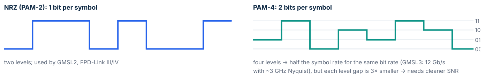
Power over Coax (PoC)
The camera's DC supply is superimposed on the same coax that carries the signal. On each side a bias-T separates the two: a capacitor in series with the SerDes pin passes only the high-frequency signal; an inductor network to the power rail passes only DC. The inductor network must present a high impedance across the entire signal band — from the low-frequency back channel to the multi-GHz forward channel — which typically needs several inductors and ferrites in series. A poorly designed PoC filter is one of the most common causes of marginal links that work on the bench and fail in the vehicle at temperature.
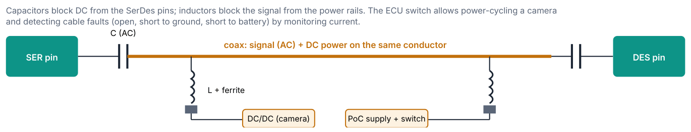
The control channel: talking to a sensor 10 m away
Software in the SoC writes to the sensor exactly as if it were local: an I²C transaction on the ECU-side bus. The deserializer recognises that the target address belongs to a remote device, sends the transaction over the back channel, the serializer replays it on its local I²C bus, and the acknowledge (and read data) travel back. This adds latency of tens to hundreds of microseconds per transaction, which matters for large register tables.
The classic multi-camera problem: four identical sensors all have the same I²C address. SerDes solves it with address translation. On FPD-Link quad deserializers, each input port has an alias table — e.g. "physical 0x1A on port 2 is reachable as 0x52". GMSL devices offer translation in the serializer and the ability to enable or disable the control channel per link. The camera driver programs these tables before talking to any sensor.
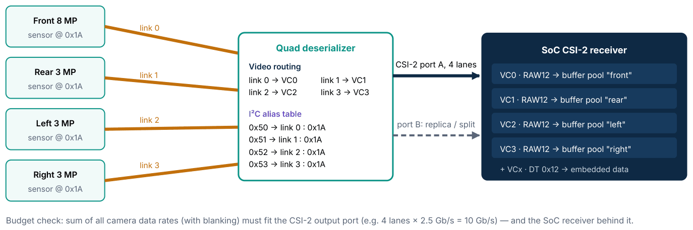
The SerDes landscape
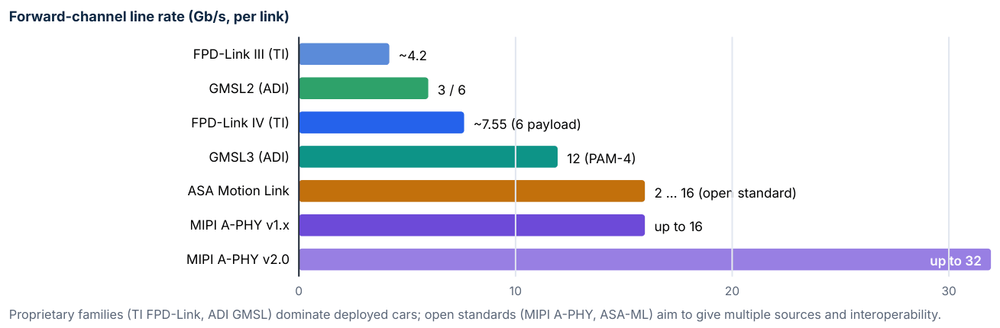
| Family | Example parts | Notes |
|---|---|---|
| TI FPD-Link III | DS90UB953 (ser), DS90UB954 / UB960 (dual / quad deser) | Huge installed base for 1–2 MP surround and rear cameras; PoC; I²C alias tables. |
| TI FPD-Link IV | DS90UB971 (ser), DS90UB9702 (quad deser) | ~7.55 Gb/s, aimed at 8 MP+ imagers, radar and lidar; backward-compatible deser options. |
| ADI GMSL2 | MAX9295A (ser), MAX9296A /MAX96712 / MAX96724 (deser) | 3 or 6 Gb/s, 187.5 Mb/s reverse; very common in ADAS (also used on many NVIDIA reference cameras). |
| ADI GMSL3 | MAX96793 (ser), MAX96792A (dual deser) | 12 Gb/s PAM-4, GMSL2-compatible; targets 8 MP at 60 fps and aggregated streams. |
| MIPI A-PHY | Multiple vendors | Open asymmetric SerDes standard; native CSI-2 transport; v2.0 doubles the max rate. |
| ASA Motion Link | Multiple vendors | Open standard from the Automotive SerDes Alliance; CSI-2 transport via an encapsulation protocol. |
Diagnostics and safety
A camera link is a safety-relevant data path, so SerDes chips are full of monitors: link lock and video lock status, CRC/ECC error counters on both directions, equaliser state (an indirect measure of eye opening and cable health), line-fault detection on the PoC current, internal voltage and temperature monitors, and videotiming checks (missing frames, wrong line counts). Many parts support ISO 26262 designs up to ASIL-B with a safety manual. A good camera driver periodically reads these and reports them; a good system design defines what to do when they fire (drop the frame, degrade the function, inform the driver).
"Link lock" does not mean "video OK". The link can be locked and the control channel working while no video arrives — wrong CSI-2 lane count on the serializer input, sensor not streaming, video pipe not enabled, or a VC routing mismatch. Debug in order: link lock → I²C to sensor → serializer sees CSI-2 → deserializer video lock → SoC receives frames. Most SerDes parts include a built-in pattern generator: use it to test the deserializer-to-SoC half without any sensor.
A newer architecture packetises camera data into standard Ethernet (multi-gigabit automotive or industrial Ethernet) instead of a point-to-point SerDes. NVIDIA, for example, offers Camera-over-Ethernet on its Thor generation via a CSI-2-to-Ethernet sensor bridge. The appeal is switched networks, standard tooling and zonal architectures; the challenges are latency determinism, cost per port and power at the camera.
"SerDes is the camera's umbilical cord. One coax carries up to 12 gigabits per second of video out, configuration and sync signals back in, and the power the camera needs. In the ECU a deserializer gathers four cameras into one MIPI stream, tagging each with its own virtual channel. The two ends must be from the same family — GMSL, FPD-Link or one of the open standards A-PHY and ASA Motion Link — so the SerDes choice is a platform decision, not a camera detail."
9Into the SoC: capture and DMA
Gigabits of pixels arrive every second and must land in memory on time, in the right place, without the CPU lifting a finger. That is the job of the CSI-2 receiver and its DMA engines — the least glamorous and most unforgiving part of the camera path.
What the receiver does
The SoC's camera input block (TI calls it CSI_RX_IF, NVIDIA NVCSI + VI, Qualcomm CSIPHY + CSID + IFE) performs, in hardware, a fixed sequence: the PHY terminates and de-skews the lanes; the lane merger rebuilds bytes into packets; the protocol decoder checks ECC and CRC and counts errors; a VC/DT filter sorts packets into streams; an optional unpacker converts RAW10/12 into 16-bit words; and finally each stream is either streamed directly into the ISP (inline, "on-the-fly") or written into DRAM by DMA for later processing.
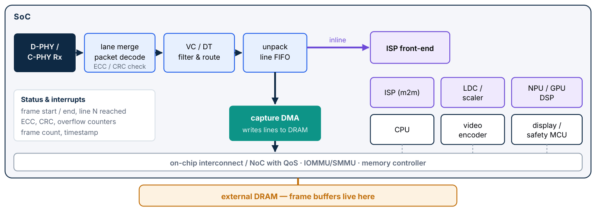
Why DMA, and how it works
Direct Memory Access means a hardware engine, not the CPU, moves data. A single 8 MP camera at 30 fps produces ~500 MB/s of RAW data (16-bit containers); eight cameras produce several GB/s. Copying that with CPU instructions would consume whole cores, pollute caches and add jitter. A DMA engine instead receives a small descriptor — "write the next frame to address A, with line pitch P, for H lines, then raise an interrupt" — and streams data straight from the receiver FIFO to the memory controller.
The driver keeps a pool of buffers per camera (typically 3–8) circulating between hardware and software. The cycle is always the same: an empty buffer is queued to hardware; the DMA fills it during one frame; on Frame End an interrupt moves it to the done queue with a timestamp and sequence number; the application or the next accelerator processes it; then it is returned to the empty queue. If the application holds buffers too long and the hardware finds no empty buffer at Frame Start, the frame is dropped — a counter you should always monitor.
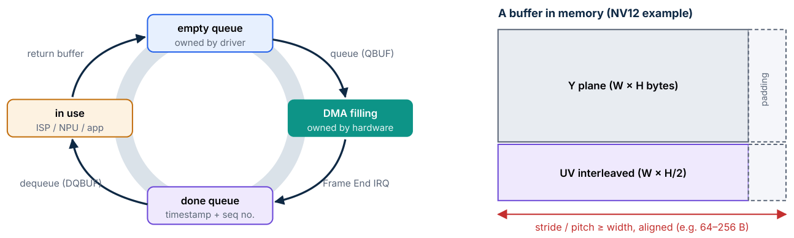
The details that bite
Stride and alignment. Each engine has its own alignment rules (64, 128, 256 bytes; sometimes 2D tiling). A stride mismatch between producer and consumer gives a diagonally sheared image — instantly recognisable once you have seen it. Cache coherency. The DMA writes to DRAM, but the CPU may still hold old data for the same addresses in its cache. Buffers are therefore either mapped uncached / write-combined, or the driver performs cache invalidate before the CPU reads them. Forgetting this gives frames that are partially from the previous capture. IOMMU / SMMU. Devices see virtual addresses translated by an I/O memory-management unit. This allows large buffers built from scattered physical pages and — important for safety and hypervisors — prevents a camera engine from writing into memory it does not own. Zero-copy sharing. The same buffer must flow from capture to ISP to NPU to encoder without copies. Linux uses dma-buf file descriptors and fences for this; NVIDIA (NvSciBuf/NvStreams), Qualcomm and TI frameworks have equivalents. A hidden memcpy in this chain silently costs bandwidth and latency. Real-time QoS. The receiver's on-chip FIFO holds only a few lines. Camera writes are isochronous: they cannot wait. If the NPU saturates DRAM and camera DMA is starved for a few microseconds, the FIFO overflows and a frame is corrupted. Interconnect QoS priorities for the camera path are a key part of SoC configuration. Low-latency modes. Waiting for Frame End adds a full readout time (~30 ms at 30 fps). Line-based interrupts ("slice" or "line N reached") or inline ISP processing let the next stage start while the frame is still arriving.
On Linux the chain is modelled with V4L2 and the media controller: each component (sensor, serializer, deserializer, CSI-2 receiver, ISP) is a sub-device; links between pads form a media graph that you inspect with media-ctl -p , and buffers are handled on a /dev/videoN node with REQBUFS / QBUF /DQBUF / STREAMON. The hardware topology and SerDes ports are described in the device tree. Safetycritical stacks on QNX or RTOS use vendor frameworks instead, but the concepts — routing, formats, buffer queues — are identical.
10The ISP pipeline and 3A
The image signal processor is a hardware assembly line that converts sensor RAW data into images people and networks can use. It runs at hundreds of megapixels per second, and its dozen stages — plus the control loops around them — define most of what is called "image quality".
The assembly line
An ISP is built from fixed-function hardware stages (with programmable parameters) because the arithmetic per pixel is large and must happen at sensor speed with low power. The stages work in three "domains": first on Bayer RAW (one value per pixel), then on RGB (three values per pixel, after demosaic), and finally on YUV (brightness + colour difference, ready for networks, encoders and displays). The exact order varies by vendor, but the logic is universal.
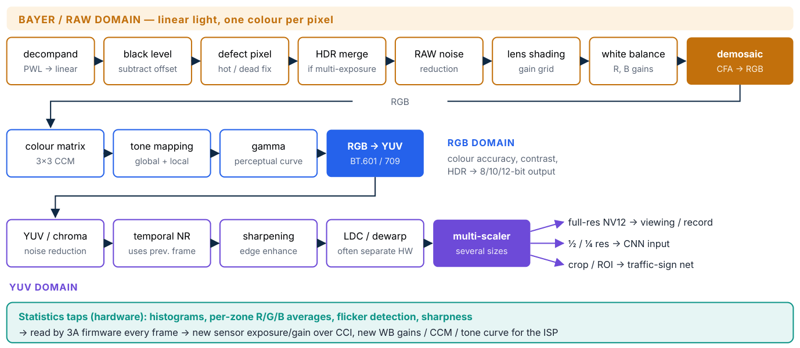
What each stage does — and what goes wrong
| Stage | Purpose in one sentence | If mistuned you see… |
|---|---|---|
| Decompand | Invert the sensor's PWL curve to recover linear values. | Banding, colour shifts in highlights |
| Black level | Subtract the sensor's dark offset (it rises with temperature). | Milky, low-contrast or green/magenta-tinted shadows |
| Defect pixel correction | Replace hot, dead or stuck pixels from a calibrated map or by detecting outliers. | White/coloured dots (worse when hot); or smeared stars and lost detail if too aggressive |
| HDR merge | Combine exposures into one linear HDR image, handling motion. | Ghosts, coloured edges on moving objects, SNR bands |
| Lens shading | Multiply by a gain map to flatten corner falloff, per colour. | Dark corners or colour-tinted corners (colour shading) |
| White balance | Scale R and B so neutral objects come out neutral under any light. | Blue or orange cast, wrong traffic-light colour |
| Demosaic | Interpolate the missing colours at each pixel, following edges. | Zipper edges, false colours, moiré |
| Colour matrix (CCM) | Map sensor-specific colours to a standard colour space. | Unnatural or desaturated colours, noisy chroma |
| Tone mapping | Compress 20+ bit HDR into 8–12 bit while keeping local contrast. | Flat "HDR look", halos around bright objects, crushed shadows |
| Noise reduction | Remove noise spatially and over time while keeping detail. | Plastic textures, lost far-away pedestrians, motion trails (temporal) |
| Sharpening | Boost edge contrast to look crisper. | White/black halos — false edges that confuse CNNs |
| LDC / dewarp | Remove lens distortion or re-project (e.g. fisheye → rectilinear, top view). | Bent lines, resolution loss at the periphery |
Tone mapping: the hardest compromise
A 24-bit HDR image cannot be shown on an 8-bit display or fed efficiently to an 8-bit network. A global tone curve compresses everything the same way and quickly flattens contrast. Local tone mapping (LTM) adapts per region — it brightens the inside of the tunnel and darkens the exit separately — preserving visible detail in both. Done too strongly it produces halos and an unnatural look; done too weakly, objects in shadows vanish. For perception, temporal stability matters as much as appearance: a tone curve that "pumps" frame to frame changes object appearance and hurts tracking.
3A: the control loops around the ISP
"3A" is auto-exposure (AE), auto-white-balance (AWB) and auto-focus (AF). Automotive cameras are fixedfocus, so in practice it is 2A — sometimes plus flicker detection and dynamic tuning. The ISP hardware computes statistics; firmware (on a DSP, a real-time core or the application CPU) runs algorithms on them and writes back new parameters every frame.
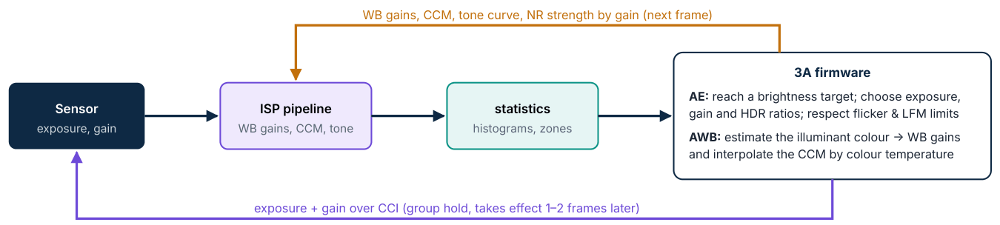
Dynamic tuning is the less visible half of 3A: almost every ISP parameter (noise reduction strength, sharpening, colour saturation, local tone mapping) is stored as a table indexed by gain, exposure or scene brightness, and the firmware interpolates the right values every frame. That is why "ISP tuning" is a multiweek effort per sensor-lens combination.
Tuning for humans versus tuning for networks
Viewing (surround view, mirrors, recording)
Pleasing colour, low visible noise, crisp edges, smooth tone curve, consistent colour between cameras for stitching. Measured with subjective review plus colour error (ΔE), MTF, noise and flare metrics.
Perception (CNNs, classical CV)
Preserve real detail (lighter noise reduction), avoid halos and fake edges (little or no sharpening), stable exposure and tone over time, consistent between training and deployment. Measured by network KPIs, not by eye.
Many platforms let one ISP produce two outputs from the same RAW frame, or run the ISP twice with different tuning. Some teams go further and feed lightly processed RAW or linear RGB directly into the network. Industry-wide, the IEEE P2020 effort has defined automotive-specific image-quality metrics — such as flicker, contrast detection probability and SNR across HDR — because consumer-camera metrics do not capture what matters for driving.
Calibration: making every camera behave the same
Each sensor-lens design is calibrated in the lab: black level vs temperature, noise profile vs gain (feeds noise reduction), lens shading maps for several illuminants, colour matrices from a colour chart under D65, TL84 and incandescent light, and AWB reference points. Each individual camera may additionally carry per-unit calibration in an EEPROM or the sensor's OTP memory (shading, WB, defect map, plus the intrinsic lens model for geometry). The ISP software reads it at start-up. Vendors provide tuning tools — e.g. TI's DCC-based tuning tool, Qualcomm's Chromatix, NVIDIA's ISP tuning flow — and the resulting tuning files ship with the software.
ISPs are rated in megapixels per second. TI quotes ~600 MP/s as the nominal effective throughput of one TDA4VM VISS (720 MHz at one pixel per clock, minus ~20 % overhead). An 8 MP camera at 30 fps needs ~250 MP/s; four of them need ~1 GP/s — so the ISP budget, not just DRAM, can limit camera count.
"The ISP is an assembly line in silicon. It corrects the sensor's physics — black level, defects, lens shading — reconstructs colour from the Bayer mosaic, compresses the huge HDR range into something displayable, cleans noise and produces several image sizes for different consumers. Around it, the autoexposure and white-balance loops adjust the camera every frame. Tuning it for a neural network is different from tuning it for the human eye, and we treat that as a deliberate design choice."
Measuring image quality: what each number tells you
"Good image quality" is not one property. A camera can have excellent colour and poor low-light noise, or high sharpness that comes from sharpening halos which confuse a network. Image-quality (IQ) engineering therefore breaks quality into a set of measurable properties, each with a chart, a procedure and a standard, and then decides which ones matter for the product. The lab and its procedures are covered in depth in ISP engineering 12 and 13; this section is the map.
| Property | What it answers | How it is measured | Reference |
|---|---|---|---|
| Tone response (OECF) | How does output code follow scene light? | Grey-step chart or transmissive HDR chart | ISO 14524 |
| Noise, SNR, dynamic range | How clean is each brightness level, how wide is the usable range? | Uniform patches at many levels; SNR curve with SNR1/SNR10 points | ISO 15739; EMVA 1288 for the bare sensor |
| Sharpness (SFR/MTF) | How much contrast of fine detail survives, centre and corners? | Slanted edge; SFR at a fixed spatial frequency rather than MTF50 when sharpening is on | ISO 12233 |
| Texture | Does noise reduction smear fine random detail? | Dead-leaves chart | ISO 19567-2 |
| Colour accuracy, white balance | How far are colours and greys from the reference? | ColorChecker under several lights; ΔE00 | ISO 17321-1 |
| Uniformity | Are corners as bright and as neutral as the centre? | Flat field from a uniform source | ISO 17957 |
| Flare, ghosting | How much does a bright source fog the image? | Black hole target with bright surround, or a point source sweep | ISO 18844 |
| LED flicker | Do pulsed lights flicker or vanish? | PWM-driven LED sources at many frequencies and duty cycles | IEEE 2020 |
| Contrast detection | Can a downstream algorithm still tell two levels apart? | Contrast detection probability (CDP) across the HDR range | IEEE 2020 |
Automotive testing differs from consumer camera testing in four ways. Quality is measured across the whole HDR range, because SNR dips at exposure transitions (Chapter 5) are invisible in a single mid-grey measurement. It is measured over temperature, because dark current, black level and lens focus all move between −40 °C and +105 °C. It is measured over time, because flicker and exposure or white-balance pumping hurt tracking more than any still-frame artifact. And it is judged by the task: the IEEE 2020 standard (published as IEEE Std 2020-2024, Standards 9.1) defines metrics such as CDP precisely because a pretty picture does not predict detection performance.
The SNR curve is the most useful single plot. It shows SNR against illuminance (or exposure) on log axes, as in Figure 3.4 but measured; the low-light end gives SNR1 and SNR10, the high end the saturation point, and in HDR cameras the dips between capture sources. Most other metrics are then read at a few points of that curve: sharpness at 10 lux and at 1 000 lux, colour under three lights, flicker at night with headlights in view.
"We do not say a camera has good image quality. We show the SNR curve over the full HDR range and temperature, sharpness at the centre and corners, colour error under three lights and the flicker results, and we state which of them the perception KPIs depend on. That turns a debate about pictures into a list of numbers with limits."
11Memory bandwidth
On paper a modern SoC has more than enough TOPS. In practice, multi-camera systems run out of DRAM bandwidth first, because every pixel is written and read many times by different engines that all share one memory interface.
Why DRAM is the real bottleneck
Each hardware block in Chapter 9 talks to the same external memory: capture DMA, ISP, LDC, scalers, NPU, GPU, CPU, video encoder, display. DRAM bandwidth has a hard peak, set by the data rate and bus width, and an even harder practical limit: refresh cycles, bank conflicts, page misses and read/write turnarounds mean a real workload reaches only about 60–75 % of the peak. Above roughly 70 % utilisation, latency grows sharply — and the camera path, which cannot wait (Chapter 9), is the first to suffer.
peak_bandwidth = transfer_rate × bus_width
LPDDR4x-4266, 64-bit bus : 4266 MT/s × 8 B ≈ 34 GB/s (usable ≈ 22–25 GB/s)
LPDDR5-6400, 256-bit bus : 6400 MT/s × 32 B ≈ 205 GB/s (high-end class, e.g. Orin)Every pixel is touched many times
The most useful mental model is bytes per pixel moved through DRAM. Follow one pixel through a typical memory-to-memory pipeline:
| Step | Operation | Bytes/pixel | Comment |
|---|---|---|---|
| Capture | write RAW | 2.0 | RAW12 unpacked into 16-bit container |
| ISP | read RAW | 2.0 | avoided if the ISP runs inline |
| ISP | write YUV (NV12) | 1.5 | full resolution |
| LDC / dewarp | read + write NV12 | 3.0 | random-ish access, less efficient |
| Scaler / pyramid | read NV12 + write smaller images | 2.5 | several output sizes |
| Consumers | CNN input, encoder, display read | 2.0 | excluding CNN internal traffic |
| Total | ≈ 13 B/px | vs. 1.5 B/px the sensor actually sent |
A worked example: an 8-camera L2+ system
4 × 8 MP (3840 × 2160) @ 30 fps = 4 × 249 MP/s = 995 MP/s
4 × 3 MP (1920 × 1536) @ 30 fps = 4 × 88 MP/s = 354 MP/s
total pixel rate ≈ 1.35 GP/s
camera pipeline DRAM traffic ≈ 1.35 GP/s × 13 B/px ≈ 17.5 GB/s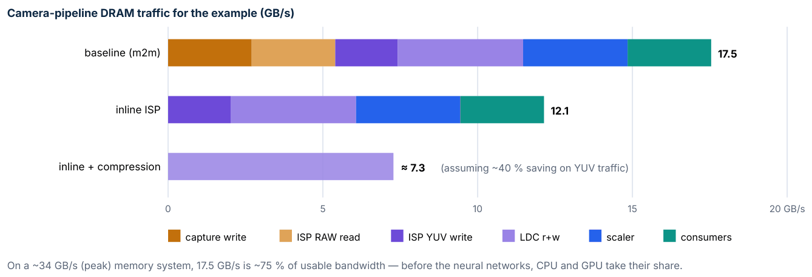
The camera pipeline is only part of the story. Neural networks read and write intermediate feature maps; for large models they can generate more DRAM traffic than all cameras together, unless the NPU keeps tensors in on-chip SRAM. The CPU, GPU rendering for surround view, logging/recording and the display also compete. This is why architects build a bandwidth budget spreadsheet early, and why the same SoC can support eight cameras in one product and only five in another.
How engineers reduce bandwidth
Inline (on-the-fly) ISP: the CSI-2 receiver feeds the ISP directly; RAW never touches DRAM (unless you also want RAW logging). Keep data packed: RAW12 packed is 1.5 B/px instead of 2.0; NV12 (1.5 B/px) instead of RGB (3 B/px) or planar float. Frame-buffer compression: Qualcomm UBWC and similar schemes from other vendors compress image tiles transparently between engines, typically saving 30–50 % of YUV traffic. Crop and scale early: if the network needs 960 × 540, produce that size in the ISP's scaler instead of writing full resolution and scaling later. Per-consumer frame rates: not every network needs every frame from every camera. On-chip memory and line-based processing: chaining ISP → LDC → scaler through on-chip SRAM in strips (TI's VPAC and its shared on-chip memory are designed around this) avoids full-frame round trips. Zero copies: share buffers between engines (dma-buf, NvSci, etc.) and measure — hidden copies are common.
Average bandwidth can look fine while peaks break the system: eight cameras whose frames all start at the same moment (because they are synchronised!) produce simultaneous write bursts. Check FIFO overflow counters under worst-case load, at maximum DRAM temperature (refresh rates increase when hot), with all networks running.
"Each pixel the sensor sends is written to and read from memory about eight to ten times before the AI is done with it. Eight cameras therefore need around 15–20 GB/s just for image handling. That is why we look at memory bandwidth, not only TOPS, when we size the platform — and why techniques like inline ISP and frame compression decide how many cameras one chip can serve."
12Platforms: TI, Qualcomm, NVIDIA
All three vendors implement the same chain — receiver, DMA, ISP, vision accelerators, AI engine, shared DRAM — but they partition it differently and wrap it in different software. Knowing the vocabulary of each lets you translate between them quickly.
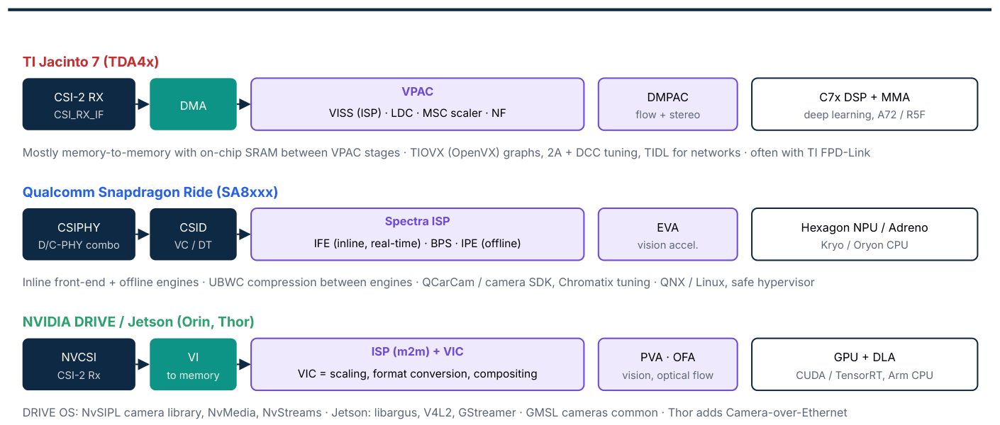
Texas Instruments — Jacinto 7 (TDA4VM, TDA4VE/AL/VL, TDA4VH/AH/VP/AP)
TI's ADAS processors are built around efficiency for front cameras, surround view and parking systems. The VPAC (Vision Processing Accelerator) bundles the VISS (TI's ISP — "Vision Imaging Sub-System"), an LDC lens-distortion corrector, the MSC multi-scaler and a noise filter. The DMPAC computes dense optical flow and stereo disparity in hardware. AI runs on C7x vector DSPs with the MMA matrix accelerator; the top TDA4VH variant offers up to 32 TOPS, two VPACs and three 4-lane CSI-2 receivers at up to 2.5 Gb/s per lane, plus two CSI-2 transmitters (useful for forwarding or debug). A safety MCU island of Cortex-R5F cores can run real-time and safety software independently from the Linux/QNX side.
On the software side, camera pipelines are usually built as TIOVX (OpenVX) graphs, with the imaging stack providing 2A algorithms and sensor drivers, and ISP tuning stored in DCC files produced by TI's tuning tool. A practical design rule from TI: count on ~600 MP/s effective throughput per VISS on TDA4VM, and remember that DRAM bandwidth may limit before that.
Qualcomm — Snapdragon Ride (SA8540P, SA8650P, SA8775P, Ride Elite)
Qualcomm's camera subsystem descends from its smartphone Spectra ISP line, which brings very mature HDR, noise reduction and tuning tools. The path is split into a CSIPHY (configurable D-PHY or C-PHY), the CSID decoder that separates virtual channels and data types, the IFE (Image Front End) that processes in real time inline and produces statistics, and offline engines — the BPS (Bayer processing) and IPE (image processing engine: noise reduction, geometric correction, scaling). An "IFE-lite" path dumps RAW to memory. Engines pass images compressed with UBWC to save bandwidth. Vision and AI run on the EVA vision accelerator, the Hexagon NPU and the Adreno GPU. The newest Ride Elite generation targets very high camera counts — Qualcomm cites support for up to 20 high-resolution cameras — together with cockpit functions on one chip. ISP tuning uses Qualcomm's Chromatix tools.
NVIDIA — DRIVE AGX and Jetson (Orin, Thor)
NVIDIA's camera path starts at NVCSI (CSI-2 receiver, 16 lanes on Orin and Thor) and VI (Video Input), which writes frames to memory; the ISP works memory-to-memory and VIC handles scaling, colour conversion and compositing. Classical vision runs on the PVA and the optical-flow accelerator (OFA); deep learning on the GPU and the DLA. On DRIVE OS, cameras are managed by NvSIPL (Safe Image Processing Library) with GMSL deserializer drivers and NvStreams for zero-copy buffer sharing; on Jetson, libargus, V4L2 and GStreamer. Jetson Thor exposes 16 CSI-2 lanes supporting up to six cameras directly (32 virtual channels with aggregation) and adds Camera-over-Ethernet via its sensor bridge, signalling a possible shift away from pure point-to-point SerDes.
Side by side
| Topic | TI Jacinto 7 | Qualcomm Ride | NVIDIA Orin / Thor |
|---|---|---|---|
| Camera receiver | CSI_RX_IF, D-PHY | CSIPHY (D/C-PHY) + CSID | NVCSI + VI |
| ISP | VISS in VPAC | Spectra: IFE, BPS, IPE | ISP + VIC |
| Geometry / scale | LDC, MSC | IPE, GPU | VIC, GPU, PVA |
| Classical CV accel. | DMPAC (flow, stereo), C7x | EVA | PVA, OFA |
| AI engine | C7x + MMA | Hexagon NPU | GPU + DLA |
| Camera framework | TIOVX, imaging, V4L2 | QCarCam / camera SDK | NvSIPL / libargus / V4L2 |
| ISP tuning | DCC tuning tool | Chromatix | NVIDIA tuning flow |
| Typical SerDes | FPD-Link (GMSL also used) | GMSL / FPD-Link | GMSL2/3; CoE on Thor |
| Sweet spot | Cost/power-efficient ADAS, front camera, parking | Scalable ADAS + cockpit, high camera counts | High-end AD compute, GPU ecosystem |
How many CSI-2 ports, lanes and lane rate — and how many virtual channels per port? Inline or memoryto-memory ISP, and how many MP/s in total? Can the ISP output several sizes in one pass? HDR merge in ISP or only decompanding? Which RAW formats and PWL curves? What is the DRAM bandwidth and is there frame compression? Which SerDes deserializers have production drivers? What safety mechanisms exist on the camera path, and up to which ASIL? Which tuning tool, and who does the tuning — the SoC vendor, the camera supplier or us?
13Timing, latency, safety and security
A camera frame is a measurement of the world at a particular moment. Knowing exactly when that moment was, how long it took to become an object list, and whether the data can be trusted is what turns a camera into a safety-relevant sensor.
Where the milliseconds go
Latency from photon to detected object is dominated not by electronics speed but by frame-based steps: the sensor must finish exposing and reading out a frame, and frame-based processing stages each wait for a complete input. The SerDes link itself adds only microseconds.
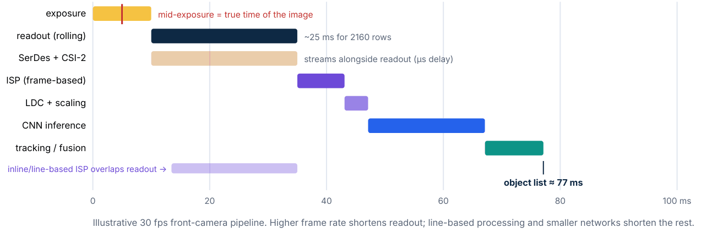
Timestamps that fusion can trust
The capture hardware timestamps Frame Start and Frame End against the SoC clock, which should be disciplined to the vehicle time base (gPTP). Software then corrects to mid-exposure using the exposure time reported in embedded data, and — for precise fusion — to the row of interest, since each rolling-shutter row is later by one line time. With hardware frame sync (Chapter 6), all cameras share the same exposure start and the remaining spread is microseconds.
Functional safety along the chain
For ISO 26262, the question is not "is the image beautiful" but "could the function act on wrong data without knowing?". Typical hazards are a frozen or repeated frame, a swapped camera (front image delivered as rear), corrupted pixels, wrong exposure or colour (a red light looking yellow), and late frames. Each block contributes detection mechanisms, and the system safety concept connects them:
| Block | Typical safety mechanisms |
|---|---|
| Sensor | Frame counter and status in embedded data, register CRC / read-back, test-pattern rows or test frames, temperature and voltage monitors, fault output pin, ASIL-capable safety manual |
| SerDes | Link lock monitoring, CRC on video and control, line-fault detection on PoC, voltage / temperature ADC, video timing checks |
| CSI-2 / capture | ECC on headers, CRC on payload, frame-start/end consistency, line count and size checks, frame timeout watchdog |
| ISP / processing | Statistics plausibility, known test images run through the pipeline, signature (checksum) checks on outputs, independent monitoring core |
| Software | Sequence-number and timestamp monitoring end to end, camera ID verification, blockage / glare /defocus detection (SOTIF, ISO 21448) |
SOTIF (ISO 21448) complements ISO 26262 for cases where nothing is broken but the camera still cannot see: sun glare, a dirty lens, heavy rain, a fogged windshield. Blockage and visibility estimation from image statistics is a standard function of camera stacks for this reason.
Security
A camera link is also an attack surface: someone with physical access could inject a video stream or tamper with sensor configuration through the control channel. MIPI has published security extensions for the camera path (the CSE / camera security specifications for end-to-end protection of image data and the CCISE extensions for the control channel), and the open SerDes standards include security options. Under ISO/SAE 21434 the threat analysis decides whether frame authentication is needed for a given function; it is increasingly expected for cameras that feed automated driving.
"Our end-to-end latency from photon to object list is roughly 60–80 ms at 30 fps, and most of it is the frame period and the neural network — the cable adds microseconds. Every frame carries a counter and an exact exposure timestamp, so the fusion knows when the image was taken and the safety monitor can detect frozen, swapped or corrupted frames."
14Production: per-unit calibration at the end of line
Tuning is done on a handful of golden samples. A production line then builds hundreds of thousands of camera modules, and no two of them have exactly the same filters, lens and sensor. End-of-line (EOL) calibration measures each unit just enough to make it behave like the golden sample, stores the result in the module, and lets the software apply it at every start-up.
Characterisation, tuning and per-unit calibration are three different jobs
Three activities are often all called "calibration", and confusing them leads to arguments about who owns what. Characterisation measures a design once: the noise model, black level over temperature, the white-point locus, the colour matrices per light source. Tuning turns those measurements and many subjective and task-driven decisions into the parameter set of the ISP (ISP engineering 8). Both are done per sensor-lens design, on a few samples, and they ship as a tuning file in the software release. Per-unit calibration is different: it is done on every single module in the factory, it measures only what varies from unit to unit, and its result is stored in the module itself.
| Activity | How often | Who, where | Result stored in |
|---|---|---|---|
| Characterisation and tuning | Once per design, updated per release | ISP / IQ team, IQ lab | Tuning file in the software release |
| Camera-module EOL calibration | Every module | Camera supplier's end-of-line station | Module EEPROM or sensor OTP |
| Vehicle EOL calibration | Every car | Vehicle plant calibration station | ECU calibration file (extrinsics; Camera geometry 6.2) |
| Service and online calibration | After repairs; continuously while driving | Workshop; software in the car | ECU calibration file (Classic CV 5.3) |
The camera module's record travels with the module. If a camera is replaced in a workshop, the new one brings its own shading table, white-balance ratios and intrinsics, and the ECU reads them at the next start-up. This is the main reason the data lives in the module's EEPROM and not in the ECU. The lifecycle of the calibration files on the ECU side is described in Camera ECU 9.3, the plant view in Production integration 13.4, and per-unit geometric intrinsics in Camera geometry 5.6. This chapter covers the photometric part: what makes two cameras of the same design produce different images, and how the factory removes that difference.
Why every unit differs, and by how much
Every part of the optical path has a tolerance. The thickness and dye concentration of the colour filters vary from wafer to wafer, which changes the balance of red, green and blue. The cut-off edge of the IR-cut filter moves by several nanometres between coating batches and with the angle of incidence, and because the red filter's sensitivity sits right next to that edge, a few nanometres change the red response noticeably. The lens transmission, its relative illumination and, above all, the position of the optical axis relative to the sensor centre vary from one active alignment to the next. The sensor adds pixel response non-uniformity, black-level offsets and its own set of defective pixels.
To see what this does to colour, the supplement experiment builds 2 000 virtual modules from the real spectral sensitivities of the simulated camera: each unit gets a red and a blue sensitivity scaled by a random factor (σ = 2.5 %) and an IR-cut edge shifted by a random amount (σ = 5 nm). These spreads are assumptions for illustration, not data from a specific supplier. Under D65 the ratio of red to green on a white target (R/G) then varies with σ = 3.6 % and B/G with σ = 2.5 %. If every unit used the golden module's white-balance gains, a grey patch would show a mean colour cast of ΔE00 2.7 against the golden module and 5.4 at the 95th percentile, enough to see side by side and enough to make neighbouring surround-view cameras disagree at the stitching seams.
Shading behaves the same way. With an optical-centre offset of σ = 20 pixels and a 5 % spread in fall-off strength on a 1920 × 1080 sensor whose corners receive 42 % of the centre light, correcting every unit with the golden shading table leaves a worst-pixel flatness error of 5.7 % on average and 10.7 % at the 95th percentile. A per-unit 17 × 17 table reduces it to 0.4 %, limited only by the mesh interpolation.
cp_numbers.py).One could try to solve this by tightening the part specifications. The numbers show why that is expensive. With a ±6 % limit on R/G, the simulated population has a process capability Cpk (distance from the mean to the nearer limit, in units of three standard deviations) of 0.56, and 9.4 % of the modules would be rejected. Measuring each unit and correcting it in software is much cheaper than scrapping one module in ten, and it moves the specification from "the part must be within ±6 %" to "the calibrated module must be within ±1 % of golden", which the factory can meet with a high Cpk.
For a viewing camera, unit spread is visible as different colour casts between the four surround-view cameras or between two cars side by side. For a perception camera it is a silent distribution shift: the network was trained and validated on images from a few modules, and every production unit shows it slightly different colours and corner brightness. Per-unit calibration is what makes "the camera" in the validation report the same camera as the one in the customer's car.
The end-of-line station, step by step
An EOL station is a light-tight fixture with a uniform light source, a chart, a power and video interface and a computer, built to put every module through the same sequence in a fixed cycle time. The sequence below is typical for a viewing or perception camera module; the exact steps and limits are agreed between the camera supplier and the customer and are part of the production control plan.
The module is clamped into a fixture that defines its position and orientation. The station reads the serial number (label or sensor unique ID), powers the module through the same SerDes link as the car, checks that the link locks and that the sensor answers on the control channel with the expected chip ID and firmware. A module that fails here is not calibrated at all.
The lens was actively aligned and glued earlier in the line; here the station checks the result. It captures a chart and computes the SFR (spatial frequency response) at the centre and in the corners at a fixed spatial frequency. A tilted or defocused lens shows up as unequal corner values. The measured values are stored, so a later field return can be compared with how the unit left the factory.
With the light off, the station captures dark frames at one or more gains and exposure times. From them it computes the black level per channel and finds hot pixels (too bright in the dark) and, together with step 4, dead or weak pixels. Defects that exceed the specification count, or form clusters, fail the unit; the rest go into the defect list.
A uniform, diffuse light source (an integrating sphere or a diffuser panel with a controlled spectrum, usually close to daylight) fills the whole field of view. Averaging several frames reduces noise. The station computes the shading gain map per colour channel on a coarse mesh (for example 17 × 17) and the white-balance ratios R/G and B/G in a central window. The light source itself is checked with a spectrometer on a schedule, because a drifting lamp would calibrate every unit wrong in the same way.
The same measurement under a second light, usually incandescent-like (illuminant A, about 2856 K), and often a third one (a fluorescent such as TL84, or a white LED). Only the ratios are needed here; the shading map from the first light is usually enough, sometimes with a colour-temperature-dependent correction.
For cameras whose geometry matters (surround view, front cameras), a chart or a set of targets at known positions gives the intrinsic parameters and distortion of this unit (Camera geometry 5.6). Some stations also capture a colour chart to verify, not to calibrate, colour.
The station packs all results into the calibration record, adds a version and a CRC, and writes it into the module's EEPROM or the sensor's one-time-programmable memory (OTP). It then reads the record back, compares it byte by byte, and captures the flat field once more with the calibration applied: the corrected image must now be flat and neutral within the limits. This closes the loop: a record that was written but does not produce a good image is caught here, not in the car.
The unit passes or fails against the limits for each measurement. Either way, every raw measurement, the station ID, the light-source calibration state and the software version go to the factory database for traceability. Those data are what statistical process control and later field-return analysis work with.
Black level and defects depend on temperature. A hot pixel that is harmless at 25 °C in the factory can be bright at 85 °C behind a windscreen in the sun, and dark current roughly doubles every 6 to 8 °C. That is why the stored defect list is never the whole story: the ISP still runs dynamic defect correction on every frame, and the stored list only catches the pixels that are already bad at production.
Ratios, not absolute values: how the software uses the record
The calibration record does not replace the tuning; it corrects the tuning for one unit. The usual approach is to store values that are compared with the same values of the golden sample. For white balance, the module stores its own R/G and B/G under each calibration light. At run time the AWB still estimates the light and looks up the golden gains for it, then multiplies each gain by the ratio between the golden and the unit value. If the unit is 3 % redder than golden under D65, its red gain becomes 3 % smaller under D65. Between the calibration lights the correction is interpolated along the colour temperature, the same axis the tuning already uses.
The experiment shows how well this works and where it stops. With ratios stored for D65 and A, the 95th-percentile colour difference to golden over all 24 patches falls from 3.2 to 0.3 ΔE00 under D65, and from 3.4 to 0.35 under A: the unit is practically identical to golden under the lights it was measured with. Under TL84, a fluorescent tube whose colour temperature lies between the two, it only falls from 2.2 to 1.65, because its narrow spectral lines interact with the IR-cut and filter deviations differently from any blend of the two broadband lights. Adding TL84 as a third calibration light brings it to 0.07, and helps a 4100 K white LED from 0.85 to 0.48. The lesson is general: calibrate under lights that resemble what the camera will see in use, which for automotive increasingly means LED street lighting and LED headlamps.
Shading is stored either as the unit's own gain table or as a ratio to the golden table, so that a later tuning update of the golden table (for example, deliberately leaving some vignetting to save corner noise) still applies. The defect list is merged with the dynamic defect correction. Intrinsics go to the geometry pipeline, not to the ISP.
The code that reads the record is small, but it runs on every start-up of every car, so it has to be defensive. A typical shape:
/* Calibration record as written by the module EOL station (little endian, packed). */
typedef struct {
uint32_t magic; /* 'CCAL' */
uint16_t version; /* layout version; reader supports 1..CAL_MAX_VERSION */
uint16_t length; /* bytes from magic to crc, exclusive */
char serial[16];
uint16_t black[4]; /* per CFA channel, 12-bit DN */
uint16_t wb_ratio[3][2]; /* R/G, B/G x 4096 under D65, A, TL84 */
uint16_t lsc[4][17][17]; /* shading gains x 1024 per channel */
uint16_t n_defects;
uint32_t defects[64]; /* (y << 16) | x */
uint32_t crc; /* CRC-32 over all bytes before it */
} cam_cal_t;
cal_status_t cal_load(const uint8_t *buf, size_t n, const cam_cal_t *golden, cam_cal_t *out)
{
if (n < sizeof(cam_cal_t)) return CAL_MISSING;
memcpy(out, buf, sizeof *out);
if (out->magic != CAL_MAGIC) return CAL_MISSING;
if (out->version == 0 || out->version > CAL_MAX_VERSION) return CAL_UNSUPPORTED;
if (crc32(buf, offsetof(cam_cal_t, crc)) != out->crc) return CAL_CORRUPT;
for (int l = 0; l < 3; ++l) /* plausibility: within +-15 % of golden */
for (int c = 0; c < 2; ++c)
if (abs((int)out->wb_ratio[l][c] - (int)golden->wb_ratio[l][c]) * 100
> 15 * golden->wb_ratio[l][c]) return CAL_IMPLAUSIBLE;
return CAL_OK; /* caller: on anything else use golden, set DTC, flag "uncalibrated" */
}Three details in it are the ones that bite in projects. The version field lets a newer reader handle older modules in the field and refuse a layout it does not know, instead of misreading it. The plausibility check catches the case the CRC cannot: a record that is intact but wrong, for example written by a station with a failed lamp. And the fallback is explicit: the camera keeps running with golden values, because a slightly wrong colour is far better than no rear-view image, but the system knows and reports it.
Do not assume the platform SDK reads the module's calibration for you. Vendor ISP stacks support per-design tuning files, but reading a module's EEPROM or OTP and turning it into per-unit corrections is often left to the camera or software integrator; TI, for example, states on its support forum that its SDK has no OTP support for per-unit AWB and lens-shading data and that this is usually handled by imaging third parties. Plan the reader, the format agreement with the module supplier and the fallback as project work from the start.
Golden samples, correlation and keeping production honest
Everything above is relative to the golden sample, so the golden sample has to be chosen and looked after carefully. It should sit near the centre of the production distribution, not be the best-looking unit, because all corrections are measured against it and a golden sample at the edge of the distribution makes every correction larger. It is kept in controlled storage, used only for reference measurements, and duplicated, because it will eventually be dropped or age. Limit samples near the edges of the specification are kept beside it, so that the station's pass/fail behaviour can be demonstrated.
A factory has several stations, often at several sites, and they must agree. Correlation runs the same set of reference modules through every station and compares the results; a measurement system analysis (gauge repeatability and reproducibility) shows how much of the measured spread is the measurement itself rather than the parts. A station whose light source has aged by a few percent in colour will happily calibrate every module "correctly" to the wrong target, and only correlation or a spectrometer check reveals it.
Once production runs, the stored measurements become a monitoring tool. Statistical process control watches the mean and spread of R/G, B/G, shading and focus over time. A step in the mean of R/G is often the first sign of a new IR-cut filter batch or a changed coating supplier, weeks before anyone sees a picture. The same data answer field returns: if a customer reports a pink camera, the factory record shows whether it left the line pink or became pink later.
Finally, calibration ages. Hot pixels appear over the life of a sensor, and lens focus can shift slightly with humidity and thermal cycling of the glue. These are handled in the car, not in the factory: dynamic defect correction for new defects, focus and sharpness monitoring as part of camera health checks, and online geometric calibration for mounting changes (Calibration and fusion 3.5). Per-unit EOL calibration gives every camera the same starting point; it does not freeze it there.
"We tune the camera once, on golden samples. Every production module is then measured at the supplier's end of line: dark frames for black level and defects, flat fields under two or three lights for shading and white-balance ratios, a chart for focus and intrinsics. The results go into the module's EEPROM with a version and a CRC, and our software applies them as ratios to the golden tuning at start-up, with a safe fallback if the data are missing. That way the camera we validated is the camera in every car."
Simulated spread (σ 2.5 % red/blue sensitivity, σ 5 nm IR-cut edge): R/G σ 3.6 %, B/G σ 2.5 %; grey cast with golden gains ΔE00 2.7 mean, 5.4 at p95. After two-light ratios: 0.3 ΔE00 p95 under the calibration lights. Shading with the golden table: 10.7 % worst-pixel error at p95; with a per-unit 17 × 17 table: 0.4 %. A 17 × 17 × 4 table of 16-bit gains is 2 312 bytes.
15Bring-up, debugging and the cheat sheet
Most camera problems are found by checking the chain in the right order and recognising a few classic symptoms. This chapter is the practical companion to everything above.
Bring-up in ten steps
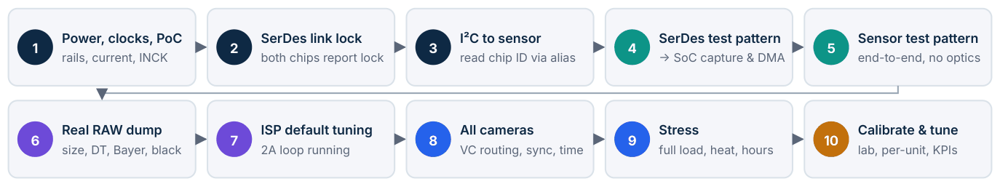
Steps 1–3 prove the physical link and the control path: measure PoC voltage and current at the camera and read the lock registers on both chips. Step 4 isolates the ECU side — the serializer's or deserializer's built-in colour-bar generator exercises CSI-2 to the SoC, VC routing and DMA without any sensor. Step 5 adds the sensor's CSI-2 output, still independent of optics and exposure. Step 6 verifies the real RAW frame: size, data type, Bayer order, black level and embedded data. Steps 7–9 bring in the ISP and 2A loop, then all cameras at once with sync and worst-case load — watching error counters and frame drops, not just the picture. Step 10 is a project of its own: lab calibration, per-unit calibration data, tuning for viewing and/or perception, and KPI measurement.
Symptom → likely cause
| You see | Look at |
|---|---|
| Green/magenta image, checkerboard colours | Bayer order (RGGB vs GRBG …), crop/flip changing the CFA phase, wrong black level |
| Red and blue swapped | NV12 vs NV21, RGB vs BGR, CCM or WB gains swapped |
| Diagonally sheared image | Stride/pitch or width mismatch between producer and consumer |
| Noisy, shifted garbage with structure | Data type mismatch (RAW10 vs RAW12), packed vs unpacked |
| A few garbage lines at the top or bottom | Embedded data not filtered by data type, wrong vertical crop |
| Two cameras' images swapped | Link-to-VC mapping, alias table, device-tree port order |
| Horizontal dark bands that roll | Light flicker vs exposure: 50/60 Hz mains (anti-banding) or LED PWM (LFM) |
| Brightness pumps up and down | AE loop delay model wrong, group hold not used, too-aggressive AE speed |
| Banding or coloured highlights in HDR | PWL knee points differ between sensor and ISP decompanding; saturation handling |
| Sporadic frame drops under load | Buffers held too long, DDR saturation, receiver FIFO overflow, QoS |
| Works on the bench, fails in the car / when hot | Cable and connector loss, PoC filter, equaliser margin, ground offsets; dark current |
| CRC errors only when other cameras run | Crosstalk, power-supply noise, spread-spectrum settings, harness routing |
Numbers to remember
| Topic | Rule of thumb |
|---|---|
| Dynamic range | 6 dB ≈ 1 bit ≈ 2×; 120 dB ≈ 20 bits ≈ 10⁶ : 1; single exposure ≈ 60–75 dB |
| Sensor data | 8 MP @ 30 fps RAW12 ≈ 3 Gb/s payload (+~20 % on the wire); 60 fps or RAW16+ → 6–10 Gb/s |
| CSI-2 | D-PHY v1.2: 2.5 Gb/s per lane, 4 lanes ≈ 10 Gb/s; C-PHY ≈ 2.28 bits/symbol |
| SerDes forward | FPD-Link III ~4.2 · GMSL2 3/6 · FPD-Link IV ~7.55 · GMSL3 12 · A-PHY up to 16 (v2.0: 32) Gb/s |
| SerDes reverse | ~50 Mb/s (FPD-Link) · 187.5 Mb/s (GMSL2/3) |
| Memory formats | RAW12 packed 1.5 B/px · RAW16 2 B/px · NV12 1.5 B/px · RGB888 3 B/px |
| DRAM traffic | ≈ 10–13 B/px for a memory-to-memory pipeline; usable DRAM ≈ 60–75 % of peak |
| ISP throughput | 8 MP @ 30 fps ≈ 250 MP/s per camera; budget the sum against the ISP's MP/s |
| Thermal | Dark current doubles every ~6–8 °C |
| LED flicker | 90 Hz PWM → exposure ≥ 11.1 ms to always catch it |
| Timing | 30 fps frame = 33.3 ms; AE settings act 1–2 frames later; photon → objects ≈ 50–100 ms |
Colour, low light and production numbers
| Topic | Rule of thumb |
|---|---|
| Colour path order | Raw → white balance (diagonal) → CCM (3 × 3, linear) → transfer function → Y′CbCr |
| CCM | Rows sum to 1; diagonal ~1.5–2, negative off-diagonals; noise gain ≈ 2 per channel (simulated camera: ΔE00 7.5 → 2.4 mean) |
| sRGB curve | 12.92·L below 0.0031308, else 1.055·L1/2.4 − 0.055; 18 % grey → code 0.46 |
| Bit depth | Linear needs ~12 bits to match 8-bit sRGB in the shadows (ΔL* per code at 1 % grey: 8-bit linear 2.7, 8-bit sRGB 0.5, 12-bit linear 0.2) |
| Y′CbCr | BT.709: KR 0.2126, KB 0.0722; BT.601: 0.299, 0.114; limited range 16–235 (Y), 16–240 (C); NV12 = 1.5 bytes/pixel |
| Light on the sensor | Esensor ≈ Escene·ρ·T / (4N²): 1.6 % of scene lux at f/1.6 with 18 % grey |
| Photons per lux | D65, 400–700 nm: ≈ 10 850 photons/s/µm² per lux at the sensor; green pixel (QE 0.6) ≈ 2 330 e⁻ |
| Night example | 3 µm, f/1.6, 33 ms, 18 % grey at 1 lx: 11 e⁻, SNR 2.8; SNR10 at ~10 lx |
| Unit spread | Few-% R/G and B/G spread is normal; correct with stored ratios under 2–3 lights, shading with a per-unit 17 × 17 table |
| Calibration record | Magic, version, serial, black, defects, WB ratios, shading, intrinsics, focus data, CRC; fall back to golden with a DTC |
QSelf-check questions
Short model answers first, then questions that check understanding with why and what if.
Q.1Core questions
Walk through the camera chain from photon to neural network.Basic
The lens forms an image on the sensor; each photodiode collects electrons during the exposure, a column ADC digitises them, and the sensor packs RAW lines into MIPI CSI-2 packets. A serializer turns CSI-2 into one high-speed stream on a coax cable that also carries power and a control back-channel; the deserializer in the ECU equalises it and outputs CSI-2 again. The SoC's receiver checks and sorts packets, DMA writes frames to DRAM, the ISP turns RAW Bayer into YUV, and vision accelerators and the NPU produce objects. Each stage can only work with what the previous one delivered.
How is dynamic range expressed, and how many bits does 120 dB need?Basic
DR(dB) = 20 log₁₀(max/min). Every 6 dB doubles the ratio, so one linear bit is worth about 6 dB: 12 bits ≈ 72 dB, 20 bits ≈ 120 dB, a ratio of a million to one. A single exposure of a pixel with 10 000 e⁻ full well and 2 e⁻ read noise reaches about 74 dB, which is why tunnel exits and night scenes with headlights need HDR techniques.
Compare the main HDR techniques.Intermediate
Multi-exposure (staggered or DOL) captures long and short exposures of each row and merges them; it is intuitive but moving objects are sampled at different times, giving ghosts, and short exposures can miss LEDs. Dual conversion gain reads the same charge through a low-noise and a high-capacity path with no time gap. Split pixels put a large and a small photodiode under one microlens, so both exposures overlap in time. LOFIC adds an overflow capacitor that stores charge beyond the photodiode's capacity. Real sensors combine them, and every switch point creates an SNR dip.
What is LED flicker and how do sensors mitigate it?Intermediate
LED traffic lights, signs and lamps are pulse-width modulated, typically at 90 Hz to several kHz. In daylight a camera's exposure can be far shorter than one PWM period, so some frames catch the LED while it is off and the light seems to blink or vanish. Only an exposure that spans a full period (11.1 ms at 90 Hz) is guaranteed to see it. LFM sensors make such long exposures possible in sunlight by using a low-sensitivity sub-pixel or an overflow capacitor that does not saturate.
What is PWL companding and why must both ends agree?Intermediate
A merged HDR pixel needs 20 to 24 linear bits. The sensor compresses it with a piecewise-linear curve into 12 or 16 bits, exploiting that shot noise grows with the signal so bright values can be stored coarsely. The ISP's first stage expands it with the exact inverse. If the knee points in the ISP's decompanding LUT do not match the sensor's configuration, highlights get banding and wrong colours, and every later stage works on non-linear data.
Rolling shutter versus global shutter: what is the trade-off?Basic
A rolling shutter exposes each row one line time after the row above, so the frame is smeared over the readout time (often 10 to 30 ms); fast motion skews, and each row has its own timestamp. It is simple, low-noise and high in dynamic range. A global shutter exposes all pixels at once and stores the charge in the pixel until readout, which costs fill factor, noise and dynamic range. Exterior automotive cameras are mostly rolling shutter; driver-monitoring cameras with pulsed IR illumination often use global shutter.
Which noise sources matter, and what does the SNR formula say?Intermediate
Photon shot noise (√S, physics), dark current noise (thermal electrons, doubling every 6 to 8 °C), read noise from the readout chain (a few electrons, reduced by correlated double sampling), plus fixed-pattern noise and quantisation. SNR = S/√(S + D + r²). In bright light shot noise dominates and SNR grows only with √S (10 000 e⁻ gives at most 40 dB); in the dark read noise dominates and SNR collapses.
Why do some front cameras use RCCB or RCCC instead of Bayer?Intermediate
Every colour filter discards about two thirds of the light. Replacing green with clear pixels increases sensitivity for night driving, and the main consumer of a front camera is a network that needs luminance and some red (tail lights, traffic lights) more than accurate colour. The cost is in the ISP: colour must be estimated (G ≈ C − R − B, which amplifies noise), colours look shifted, and pre-trained networks and standard tuning tools assume RGGB.
What is in a CSI-2 packet, and what are virtual channel and data type?Basic
A frame is delimited by Frame Start and Frame End short packets; each line is a long packet with a header (data identifier, word count, ECC), the payload and a CRC footer. The data type says what is inside (0x2C RAW12, 0x1E YUV422 8-bit, 0x12 embedded data). The virtual channel says which logical stream it belongs to: HDR exposures of one sensor, or four cameras merged by a deserializer onto one port as VC0 to VC3.
Estimate the link bandwidth of an 8 MP camera at 30 fps.Basic
3840 × 2160 × 30 × 12 bit ≈ 2.99 Gb/s of payload; with about 20% blanking and protocol overhead roughly 3.6 Gb/s on the link, or about 0.9 Gb/s per lane over four D-PHY lanes. The same sensor at 60 fps in RAW16 needs about 9.6 Gb/s, which takes fast lanes and a GMSL3- or FPD-Link-IV-class SerDes. Blanking makes data bursty, so FIFOs must handle the peak line rate, not the average.
Why is a SerDes needed instead of running CSI-2 over a cable?Basic
CSI-2 uses up to five differential pairs, has no equalisation or power delivery, needs a separate I²C bus, and is specified for some 20 to 30 cm of PCB trace. A SerDes serialises video plus control traffic onto one coax or shielded pair, equalises 5 to 15 m of lossy harness (CTLE plus DFE), carries a slower back-channel for I²C and sync in the opposite direction, and delivers DC power over the same conductor through bias-T networks.
How can software address four identical sensors behind one deserializer?Intermediate
All four sensors answer to the same I²C address. The deserializer forwards remote transactions over each link and translates addresses: each input port has an alias table that maps a unique alias on the ECU-side bus to the physical address on that link. Video from each link is tagged with its own virtual channel. A wrong alias or VC mapping is the classic cause of two cameras' images being swapped.
Why is capture done with DMA and a pool of buffers?Intermediate
One 8 MP camera at 30 fps produces about 500 MB/s of RAW data in 16-bit containers; copying that with the CPU would waste cores and add latency. The DMA engine writes each frame straight into a buffer; the driver keeps three to eight buffers per camera circulating between hardware, driver and consumers. If consumers hold buffers too long the pool runs empty and frames are dropped, which is why buffer ownership is part of the design.
Name the ISP stages in order and explain why the order matters.Intermediate
Decompand, black level, defect correction, HDR merge, lens shading and white balance work in the linear Bayer domain, where light adds up physically. Demosaic produces RGB; the colour matrix and tone mapping decide colour and contrast; noise reduction, sharpening, distortion correction and scaling work in YUV and produce several outputs. White balance and shading must happen before the non-linear tone curve, otherwise a gain no longer corresponds to a physical light change.
How does the 3A loop work, and why does it lag?Intermediate
The ISP computes statistics (histograms, zone averages, colour sums) for frame N; the AE and AWB algorithms analyse them while frame N + 1 is being captured; new exposure, gain and white-balance values are written with group hold and take effect at frame N + 2. The loop must be tuned for speed against stability: too slow and the image stays dark after a tunnel exit, too fast and brightness oscillates. Automotive cameras are fixed focus, so it is really 2A.
How does tuning for a network differ from tuning for a viewer?Intermediate
Viewing wants pleasing colour, low visible noise, crisp edges and consistent colour across cameras for stitching. Perception wants real detail preserved (lighter noise reduction), no halos or fake edges (little sharpening), temporally stable exposure and tone, and above all the same processing as in the training data. Many platforms therefore produce two outputs from one RAW frame with different tuning, and network KPIs, not the eye, decide.
Why do multi-camera systems run out of DRAM bandwidth before compute?Advanced
Every block shares one external memory, and each pixel is written and read many times: RAW write and read, YUV write, dewarp, scaler pyramid and consumers, about 13 bytes per pixel against the 1.5 bytes the sensor sent. Eight cameras (about 1.35 Gpixel/s) need about 17.5 GB/s for image handling alone, while usable DRAM bandwidth is only 60 to 75% of peak and networks add their own feature-map traffic. Inline ISP, packed formats, frame compression and fewer intermediate copies win most of it back.
Where does photon-to-object latency come from, and which timestamp should fusion use?Advanced
Frame-based steps dominate: exposure, rolling-shutter readout (a large part of the frame period), and each processing stage that waits for a complete frame, especially the network. Cable transport adds microseconds. At 30 fps a total of 60 to 80 ms is typical. The image represents the middle of the exposure, so the frame-start timestamp from the capture hardware, taken on a clock disciplined to vehicle time (gPTP), is corrected with the exposure time from the embedded data.
How does a camera pipeline detect a frozen or swapped camera?Advanced
Every frame carries a frame counter and status in its embedded data; software checks that counters advance and timestamps progress end to end, and verifies a camera ID. SerDes and the receiver add link lock, CRC and line-count checks and a frame-timeout watchdog; the sensor offers register CRC, test-pattern rows and a fault pin. Blockage, glare and defocus detection cover the SOTIF cases where nothing is broken but the camera cannot see.
How are frame rate and exposure set in a sensor?Advanced
Through line and frame lengths in pixel clocks: line time = HTS / pixel clock and frame rate = pixel clock / (HTS × VTS). With 4400 clocks per line at 132 MHz a line takes 33.3 µs and 1000 lines give 30 fps. Exposure is set in whole lines (sometimes plus a fine part) and is limited to just under VTS, so an exposure longer than one frame period forces the frame rate down; the AE algorithm has to know these limits.
What is CIE XYZ, and why is it the reference for every other colour space?Basic
XYZ are the tristimulus values obtained by weighting a spectrum with the CIE 1931 colour matching functions, which were derived from human colour-matching experiments. Two stimuli with equal XYZ match for the standard observer, and Y is luminance. sRGB, BT.709, BT.2020, CIELAB and display colour are all defined by fixed transforms from XYZ, so it is the common ground on which camera colour, display colour and colour measurement meet.
What does a colour correction matrix do, and where in the pipeline does it sit?Basic
After white balance it maps the sensor's own white-balanced RGB onto standard primaries (for example linear sRGB) with a 3 × 3 matrix. It sits in linear light, before the transfer function, because it models a mixing of channels that is only valid on linear values. It is fitted on a chart such as the ColorChecker, with rows summing to one so that white stays white; on the simulated camera it reduces the mean ΔE00 from 7.5 to 2.4.
Why can no 3 × 3 matrix make a camera see colour exactly like a person?Intermediate
Because the camera's spectral sensitivities are not a linear combination of the eye's colour matching functions (the Luther condition is not met). Spectra that match for the eye can then differ for the camera and vice versa (sensor metamerism), so any matrix is a best fit for a set of reference colours and a given light, with a residual error.
Why is a transfer function such as sRGB applied before storing 8-bit images?Basic
Lightness perception is roughly a cube root of luminance, but a linear code spends half its values on the brightest stop. The transfer function expands the shadows and compresses the highlights before quantisation, so 8 bits give steps that are nearly invisible everywhere. At 1 % grey an 8-bit linear step is about 2.7 L* units, an 8-bit sRGB step about 0.5.
What is the difference between luma and luminance, and between limited and full range?Intermediate
Luminance Y is a linear-light quantity from XYZ; luma Y′ is a weighted sum of gamma-encoded R′G′B′ with the coefficients of BT.601, BT.709 or BT.2020. Limited (video) range puts 8-bit black at 16 and white at 235 (chroma 16 to 240); full range uses 0 to 255. The matrix and the range are metadata that must travel with a YUV buffer, or the consumer decodes washed-out or clipped and slightly hue-shifted colours.
How many electrons does a pixel collect from a grey object at 1 lux?Intermediate
Follow the light: sensor-plane illuminance is about scene lux × reflectance × lens transmission / (4N²), 1.6 % of the scene at f/1.6 with an 18 % grey object. Daylight delivers about 10 850 photons/s/µm² per lux, and a green pixel with peak QE 0.6 converts about 2 330 of them. A 3 µm pixel at 33 ms then collects about 11 electrons, an SNR of 2.8 with 2 e⁻ read noise; about 10 lux are needed for SNR 10.
Which image-quality properties are measured for an automotive camera, and how is the testing different from consumer cameras?Intermediate
Tone response, noise and SNR curve with dynamic range, sharpness (slanted-edge SFR), texture, colour accuracy and white balance, uniformity, flare, LED flicker and contrast detection probability. Automotive tests cover the whole HDR range including SNR dips, the full temperature range, behaviour over time (flicker, exposure and white-balance stability), and are judged against what perception needs; IEEE Std 2020-2024 defines the automotive-specific metrics.
What is measured on every camera module at the end of line, and where is it stored?Basic
Identity and link, focus (SFR in centre and corners), dark frames for black level and hot pixels, flat fields under two or three lights for the shading table and the R/G and B/G ratios, and for geometric cameras the intrinsics. The results go into a versioned record with a CRC in the module's EEPROM or the sensor's OTP, are read back and verified with a corrected capture, and every measurement is uploaded for traceability.
How does the software apply stored white-balance ratios?Advanced
The AWB still estimates the light and looks up the golden gains for it. Each gain is multiplied by the ratio of the golden to the unit's R/G or B/G measured under the calibration lights, interpolated along colour temperature between them. In the simulation this makes a unit practically identical to golden under the calibration lights (0.3 ΔE00 at the 95th percentile), but a spiky fluorescent light between two broadband calibration lights is only partly corrected unless it is calibrated as a third light.
Q.2Why and what if
What if the receiver expects RAW12 but the sensor sends RAW10?What if
Nothing fails loudly: the bytes are unpacked with the wrong bit layout and the picture comes out shifted, noisy and wrongly coloured, often with a word-count error. The first check is the data type in the packet header against the receiver configuration, then packed versus unpacked storage.
Why is a diagonally sheared image almost always a stride problem?Why
If the consumer assumes a different number of bytes per row than the producer wrote, every row starts a little earlier or later than it should, and the error accumulates row by row into a diagonal shear. Engines have their own alignment rules (64, 128, 256 bytes), so the stride is often larger than the visible width and must be passed with the buffer.
What if the SerDes link is locked but no video arrives?What if
Link lock only means the serial link and control channel work. Typical causes are a wrong CSI-2 lane count or data rate at the serializer input, a sensor that was never told to stream, a video pipe not enabled, or a virtual channel the receiver does not map. The serializer's or deserializer's colour-bar generator splits the problem into camera side and ECU side.
Why does upgrading from 3 MP to 8 MP not always help perception?Why
If the lens MTF is low at the new Nyquist frequency, the extra pixels resample blur. Smaller pixels collect less light each, so low-light SNR drops. Link, ISP and DRAM load grow almost linearly with pixel count, and the network may have to downscale the image anyway. The upgrade pays off only with a matching lens and a perception design that uses the extra resolution, e.g. for long-range detection in a crop.
What if exposure and gain take effect on different frames?What if
One frame gets the new exposure with the old gain (or the reverse) and flashes bright or dark, which AE then reacts to, so brightness can pump. Group hold collects the register writes and applies them together at one frame boundary; the AE model must also know the one- or two-frame delay of each setting.
Why can synchronising all cameras cause frame drops?Why
Synchronised cameras start their frames at the same moment, so their DMA write bursts hit DRAM simultaneously. Average bandwidth looks fine but the peak can overflow receiver FIFOs. Remedies are QoS settings, larger FIFOs, staggering readout where geometry allows, and checking FIFO overflow counters under worst-case load.
Why do networks lose accuracy when the ISP tuning changes?Why
A network learns the statistics of the images it was trained on: noise texture, sharpening halos, tone curve, colour rendering. A new tuning, a different ISP or a different CFA shifts those statistics, which is a domain shift like any other. ISP tuning for perception must therefore be frozen and versioned together with the training data, and changes validated on network KPIs.
What happens to the camera chain when it gets hot?What if
Dark current roughly doubles every 6 to 8 °C, so the black level rises, hot pixels appear and low-light noise grows; black-level and defect correction must track temperature. The cable and connector lose more at temperature and the equaliser margin shrinks, so CRC errors that never occur on the bench can appear in the car. Lens focus can also drift.
Why does the HDR SNR dip matter for perception?Why
At each switch from one exposure, gain or photodiode to the next, the new source has captured fewer electrons for the same brightness, so SNR drops abruptly. Objects whose brightness falls just above a switch point appear noisier than darker ones and can show visible noise bands. A design keeps every dip above the minimum SNR the application needs.
Why does synchronising frame start not synchronise what the cameras saw?Why
Motion is captured at the middle of the exposure, and cameras running different exposure times have different mid-points even with the same frame start. With a rolling shutter each row also has its own time. Accurate fusion uses per-camera (or per-row) mid-exposure timestamps rather than a shared frame time.
Why does a CCM that improves colour accuracy make low-light images worse?Why
Its large diagonal and negative off-diagonal terms subtract channel overlap, and each output channel adds the independent noise of three inputs: a row like (1.92, −0.72, −0.20) has a noise gain of about 2.1. In good light the colour gain is worth it; at high gain the same matrix multiplies chroma noise, so ISPs blend towards a weaker matrix or lower saturation as gain rises.
What if a network trained on linear RGB is fed sRGB-encoded images?What if
Every value except black and white moves: mid-grey 0.18 becomes 0.46, shadows are lifted strongly and contrast ratios change. The network sees a systematic distribution shift, typically losing accuracy in dark scenes, without any error message. The cure is to specify linear or encoded, the curve, the bit depth, the colour space and range of every perception input, and to keep training and deployment pipelines identical.
Why are datasheet SNR1 values of two sensors often not comparable?Why
Vendors use different conditions: sensor-plane versus scene illuminance (about a factor of 60 at f/1.6 with grey), white versus grey objects, exposure times, light spectra and sometimes noise reduction. Comparison requires the same definition, ideally EMVA 1288 for the bare sensor and the same camera-level measurement for the module.
Why calibrate every unit instead of tightening the part tolerances?Why
Filter, IR-cut and lens tolerances that are cheap to manufacture already give a few percent of colour-ratio spread; in the simulation a ±6 % R/G limit has a Cpk of 0.56 and would reject 9.4 % of modules. A few seconds of measurement and a software correction remove most of the spread and let the specification apply to the calibrated result instead of the raw part.
What if the calibration record is missing or corrupt in a car?What if
The camera must still work: the software falls back to golden values, sets a diagnostic trouble code and tells perception and calibration monitors that this camera is uncalibrated, so they can widen tolerances or degrade features. Blocking the stream would turn a small colour error into a lost rear-view or surround-view function.
Why must the golden sample sit near the centre of the production distribution, and what if a station's light source drifts?What if
All corrections are measured relative to the golden sample, so a golden unit at the edge of the distribution makes every correction larger and pushes some units beyond plausibility limits. A drifting station lamp calibrates every unit consistently to the wrong target; only correlation with reference modules across stations and periodic spectrometer checks reveal it, which is why both are part of the production control plan.
GGlossary
- 3A / 2A
- Auto-exposure, auto-white-balance, auto-focus (2A without focus).
- A-PHY
- MIPI's open asymmetric automotive SerDes PHY standard.
- Alias table
- Deserializer table that maps unique ECU-side I²C addresses to identical sensor addresses on each link.
- ASA-ML
- Automotive SerDes Alliance Motion Link, another open automotive SerDes standard.
- Bayer / CFA
- Colour filter array; Bayer is the RGGB 2 × 2 pattern.
- Bias-T
- Capacitor-inductor network that separates the DC supply from the high-frequency signal on a Power-over-Coax line.
- BSI
- Back-side illumination: light enters the silicon from the back, avoiding wiring.
- CCI
- Camera Control Interface: I²C-based register access defined by MIPI.
- CCM
- Colour correction matrix (3 × 3) mapping sensor RGB to a standard colour space.
- CDR
- Clock and data recovery: extracts timing from a serial bit stream.
- CDS
- Correlated double sampling: subtract reset level from signal level to cancel noise.
- Chromaticity (xy)
- Colour without brightness: x = X/(X+Y+Z), y = Y/(X+Y+Z); plotted in the chromaticity diagram.
- CIE XYZ
- Tristimulus values from the CIE 1931 colour matching functions; Y is luminance. The reference for all colour spaces.
- CIELAB / ΔE00
- Roughly perceptually uniform colour space (L*, a*, b*); ΔE00 (CIEDE2000) is the standard colour-difference formula, about 1 near the visibility threshold.
- Conversion gain
- Voltage change per electron on the floating diffusion, tens of µV per electron.
- Cpk
- Process capability: distance from the process mean to the nearer specification limit in units of three standard deviations; 1.33 or more is a common target.
- CSI-2
- MIPI Camera Serial Interface 2, the packet protocol cameras use.
- CTLE / DFE
- Continuous-time linear equaliser and decision-feedback equaliser that reopen the eye of a long serial link.
- D-PHY / C-PHY
- MIPI physical layers: differential pairs + clock lane / three-wire trios with embedded clock.
- Dark current
- Thermally generated electrons collected without light; roughly doubles every 6–8 °C.
- DCG
- Dual conversion gain: read the same charge with high and low gain.
- Demosaic
- Interpolating full RGB at every pixel from the CFA image.
- DMA
- Direct memory access: hardware moves data to memory without the CPU.
- DT / VC
- CSI-2 data type (pixel format) and virtual channel (stream ID).
- Embedded data
- Non-image lines with the frame's register values, counters and status.
- EOL calibration
- Per-unit measurement at the end of a production line; for camera modules black level, defects, shading, white-balance ratios, focus and intrinsics.
- Flat field
- Image of a uniform light source; used to measure shading, white-balance ratios and weak pixels.
- FPD-Link / GMSL
- TI's and Analog Devices' proprietary automotive SerDes families.
- FWC
- Full-well capacity: the maximum electrons a pixel can hold.
- Gamut
- The set of colours a colour space or device can represent; for three primaries, a triangle in the xy diagram.
- Global shutter
- All pixels expose at the same time and hold their charge until readout.
- Golden sample
- Reference module near the centre of the production distribution; tuning is done on it and per-unit data are stored relative to it.
- Group hold
- Sensor feature that applies a set of register writes at the same frame boundary.
- HDR
- High dynamic range: capturing scenes with very large contrast.
- HTS / VTS
- Line length and frame length of a sensor in pixel clocks and lines; together with the pixel clock they set frame rate and maximum exposure.
- ISP
- Image signal processor: turns RAW sensor data into usable images.
- LDC
- Lens distortion correction (dewarp).
- LFM
- LED flicker mitigation.
- Limited / full range
- 8-bit Y′CbCr coding with Y in 16–235 and C in 16–240 (limited) or 0–255 (full); must match between producer and consumer.
- LOFIC
- Lateral overflow integration capacitor: stores charge beyond the photodiode's capacity.
- LTM
- Local tone mapping: region-adaptive HDR compression.
- Luma (Y′)
- Weighted sum of gamma-encoded R′G′B′ (BT.601/709/2020 coefficients); not the same as luminance Y.
- Luther condition
- Camera sensitivities that are a linear combination of the eye's colour matching functions; met by no real sensor, so a CCM is always an approximation.
- Metamerism
- Different spectra that produce the same colour response; sensor metamerism means the camera and the eye disagree about which spectra match.
- MTF
- Modulation transfer function: how much fine-detail contrast an optical system keeps.
- NV12
- YUV 4:2:0 format: Y plane then interleaved UV plane; 1.5 B/px.
- OTP / module EEPROM
- Non-volatile memory in the sensor (one-time programmable) or on the module that carries the per-unit calibration record.
- PAM-4 / NRZ
- Four-level / two-level line coding on a serial link.
- PoC
- Power over Coax: DC supply on the signal cable.
- PWL companding
- Piecewise-linear compression of HDR values into fewer bits.
- QE
- Quantum efficiency: fraction of photons converted to electrons.
- RAW
- Unprocessed sensor output: one value per pixel in CFA order.
- Rolling shutter
- Rows are exposed and read one after another, so each row has its own capture time.
- SerDes
- Serializer / deserializer pair forming a long-reach serial link.
- SNR10
- Illumination at which SNR reaches 10 (20 dB), a low-light metric.
- Stride / pitch
- Bytes between the starts of two consecutive image rows in memory.
- Transfer function (OETF/EOTF)
- Curve between linear light and code values: sRGB, BT.709, PQ, HLG. An encoding contract, not a tone-mapping choice.
- UBWC
- Qualcomm Universal Bandwidth Compression for image buffers.
RFurther reading
Product figures in this chapter were checked against these pages in October 2026. Vendor datasheets, technical reference manuals and the MIPI specifications are the authoritative references.
- Analog Devices — MAX96793 CSI-2 to GMSL3/2 serializer: analog.
com/ en/ products/ max96793. html - Analog Devices — MAX96792A dual GMSL3/2 to CSI-2 deserializer data sheet: analog.
com/ MAX96792A/ datasheet - Texas Instruments — DS90UB971-Q1 FPD-Link IV serializer: ti.com/product/DS90UB971-Q1
- Texas Instruments — TDA4VH-Q1 product page and data sheet: ti.com/product/TDA4VH-Q1
- TI E2E forum — "TDA4VM: How to evaluate the processing capability of ISP (VPAC)": e2e.ti.com (thread 1163842)
- Qualcomm — Snapdragon Ride Elite (QAM8797P): qualcomm.
com/ automotive/ products/ qam8797p - Thundercomm — SA8255P / SA8775P Ride SX 4.0 development platform: thundercomm.com
- NVIDIA Developer Forums — Jetson Thor camera stream limits (thread 360991); NVIDIA Jetson Thor camera software /Camera-over-Ethernet documentation: docs.nvidia.com/jetson
- RidgeRun Developer Wiki — NVIDIA Jetson Thor overview: developer.ridgerun.com
- MIPI Alliance — MIPI and ASA liaison on native CSI-2 over ASA Motion Link; A-PHY v2.0 announcement: mipi.org
- EE Times / Embedded.com — ASA Motion Link line-rate range (2–16 Gb/s)
- MIPI Alliance: CSI-2, D-PHY, C-PHY and A-PHY specifications (mipi.org); the overview documents are public, the full specifications are member documents.
- J. Nakamura (ed.), Image Sensors and Signal Processing for Digital Still Cameras, CRC Press. Pixel circuits, noise and the classic ISP chain.
- EMVA Standard 1288: the standard way to measure and report sensor QE, noise, dark current and dynamic range.
- IEEE P2020 Automotive Image Quality: KPIs for flicker, dynamic range and contrast detection in automotive cameras.
- In this book: Light, lenses and the sensor plane for the optics, ISP engineering for every ISP block in tuning depth, Video compression and streaming for encoders, Embedded compute for automotive vision for the SoCs, and Multi-sensor calibration, synchronisation and fusion for timestamps and gPTP.
- IEC 61966-2-1 (sRGB), ITU-R BT.601, BT.709, BT.2020 and BT.2100 (PQ, HLG): the definitions of the colour spaces, matrices, ranges and transfer functions used in Chapter 4.
- C. Poynton, Digital Video and HD: Algorithms and Interfaces, Morgan Kaufmann. Luma versus luminance, ranges, chroma subsampling and transfer functions explained carefully.
- R. W. G. Hunt and M. R. Pointer, Measuring Colour, Wiley. CIE colorimetry, CIELAB and colour-difference formulae.
- ISO 12233 (SFR), ISO 14524 (OECF), ISO 15739 (noise), ISO 17321-1 (colour characterisation), ISO 17957 (shading), ISO 18844 (flare), ISO 19567-2 (texture): the camera image-quality measurement standards behind Section 10.
- IEEE Std 2020-2024, Standard for Automotive System Image Quality: flicker, contrast detection probability and other automotive metrics.
- TI E2E forum thread 1508326, "TDA4AEN-Q1: OTP calibration for AWB/LSC" (2025): TI states that per-unit OTP calibration is not part of its SDK.
- Experiments for Chapters 3.5, 4.3–4.5 and 14: tools/
restructure/ camera- pipeline/ supplement/ experiments (cp_numbers.py: CCM fit and ΔE, code values per stop, photons per lux and SNR, unit-spread Monte Carlo with two- and three-light ratios, shading spread; check_interactive.js for Figure 3.4).